<!doctype html>
<html lang="en">
<head>
  <meta charset="utf-8">
  <meta name="viewport" content="width=device-width, initial-scale=1">
  <title>arxiv digest — 2026-10-03</title>
  <style>
:root {
  --bg: #ffffff;
  --fg: #1f2328;
  --muted: #59636e;
  --border: #d0d7de;
  --card: #f6f8fa;
  --link: #0969da;
}
body {
  max-width: 980px;
  margin: 0 auto;
  padding: 2rem 1rem 5rem;
  font-family: -apple-system, BlinkMacSystemFont, "Segoe UI", Helvetica, Arial, sans-serif;
  line-height: 1.55;
  color: var(--fg);
  background: var(--bg);
}
a { color: var(--link); }
img { max-width: 100%; height: auto; }
pre, code { background: var(--card); border-radius: 6px; }
pre { padding: 1rem; overflow-x: auto; }
blockquote { border-left: 4px solid var(--border); padding-left: 1rem; color: var(--muted); }
details { margin: 0.6rem 0; }
summary { cursor: pointer; font-weight: 600; }
.paper-figures-scroll {
  display: flex;
  gap: 1rem;
  overflow-x: auto;
  overscroll-behavior-x: contain;
  padding: 0.75rem 0.25rem 1rem;
  margin: 1rem 0 1.25rem;
  border-top: 1px solid var(--border);
  border-bottom: 1px solid var(--border);
  scroll-snap-type: x proximity;
}
.paper-figure-card {
  flex: 0 0 min(260px, 72vw);
  scroll-snap-align: start;
  background: var(--card);
  border: 1px solid var(--border);
  border-radius: 12px;
  padding: 0.55rem;
}
.paper-figure-card img {
  display: block;
  width: 100%;
  max-height: 240px;
  object-fit: contain;
  background: white;
  border-radius: 8px;
}
.paper-figure-caption {
  display: block;
  margin-top: 0.5rem;
  color: var(--muted);
  font-size: 0.85rem;
}
.figure-strip-hint {
  color: var(--muted);
  font-size: 0.9rem;
  margin-bottom: -0.3rem;
}
</style>
  <!-- MathJax: renders $...$ inline math and $$...$$ display math, plus
       \(...\) and \[...\]. Loaded from the official CDN; works offline
       once cached. Configured to skip code/pre blocks so arxiv IDs that
       look like dollar amounts don't get mangled. -->
  <script>
    window.MathJax = {
      tex: {
        inlineMath: [['$', '$'], ['\\(', '\\)']],
        displayMath: [['$$', '$$'], ['\\[', '\\]']],
        processEscapes: true,
        processEnvironments: true
      },
      options: {
        skipHtmlTags: ['script', 'noscript', 'style', 'textarea', 'pre', 'code'],
        ignoreHtmlClass: 'tex2jax_ignore',
        processHtmlClass: 'tex2jax_process'
      }
    };
  </script>
  <script id="MathJax-script" async
    src="https://cdn.jsdelivr.net/npm/mathjax@3/es5/tex-chtml.js"></script>
</head>
<body>
<header style="background-color: #333; color: white; padding: 15px; margin-bottom: 20px;">
  <h1 style="margin: 0; font-size: 24px;">
    <a href="https://ochelpan.github.io/arXiv_clean/" style="color: white; text-decoration: none;">Main</a>
  </h1>
</header>

<h1>Daily arXiv Report</h1>

<hr>
<p>
<a href="index.html">← Index</a>
 · <a href="papers_03.html">← Previous</a> · <a href="papers_05.html">Next →</a>
</p>
<hr>

<h2>Papers 61–80</h2>
<p><a id="paper-2610.00918"></a></p>
<h3 id="telecom-band-optical-transitions-of-erbium-atoms-in-rare-gas-solids"><a href="http://arxiv.org/abs/2610.00918v1">Telecom-Band Optical Transitions of Erbium Atoms in Rare-Gas Solids</a></h3>
<p><strong>Authors:</strong> Evgenii Zaitsev, Alec Dinerstein, Shan Zou, Charles Peretti, Yutian Wen, Wei Guo, Gregory V. Hartland, Yizhong Huang, Dafei Jin<br>
<strong>Type:</strong> experiment · <strong>Category:</strong> other · <strong>PDF:</strong> <a href="https://arxiv.org/pdf/2610.00918v1">https://arxiv.org/pdf/2610.00918v1</a><br>
<strong>Analysis basis:</strong> full PDF text, analyzed in chunks
<strong>Topic relevance:</strong> <code>quantum optics experiment</code> <strong>3/5</strong> · <code>QC/QI experiment</code> <strong>1/5</strong> · <code>analog quantum simulation</code> <strong>1/5</strong></p>
<div class="figure-strip-hint">↔ Scroll figures horizontally</div>
<div class="paper-figures-scroll">
<figure class="paper-figure-card">
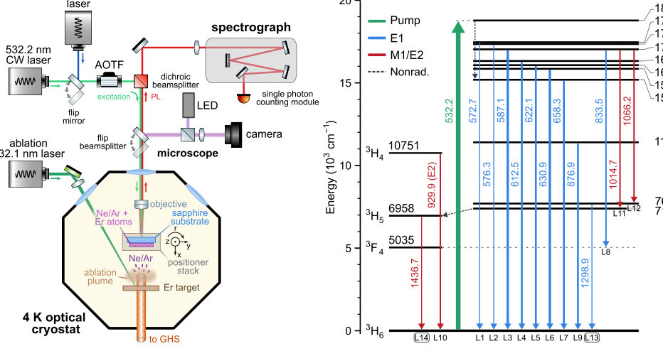
<figcaption class="paper-figure-caption"><b>Fig 1.</b> Fig. 1. (a) Experimental setup. Er atoms produced by laser ablation are co-deposited with Ne or Ar onto a cold sapphire substrate. PL is excited by a 532.2 nm CW laser or an AOTF-filtered supercontinuum source and detected with a spectrograph and single-photon detectors. (b) Simplified energy-level diagram of neutral Er 49, with even- and odd-parity levels in separate columns and energies in cm−1. The green arrow marks the 532.2 nm excitation. Blue and red arrows show the observed E1 and M1/E2 transitions L1–L14, respectively, labeled with their free-atom air wavelengths in nm; the boxed labels mark the telecom-band transitions L13 and L14. Arrow thickness indicates the relative PL...</figcaption>
</figure>
<figure class="paper-figure-card">
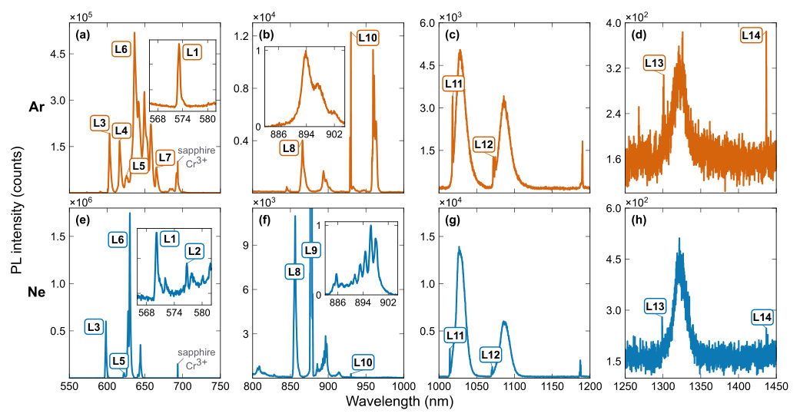
<figcaption class="paper-figure-caption"><b>Fig 2.</b> Fig. 2. PL spectra of Er in solid Ar (a–d) and Ne (e–h) at 6 K under 532.2 nm CW excitation, covering the 550–750 nm, 800–1000 nm, 1000–1200 nm, and 1250–1450 nm ranges. Labels L1–L14 mark the assigned transitions shown in Fig. 1(b); unlabeled features could not be reliably assigned to known free-atom transitions. Insets enlarge the weak features near 566–582 nm and compare the structure near 882–905 nm in the two hosts; the latter insets are baseline-subtracted and peak- normalized.</figcaption>
</figure>
<figure class="paper-figure-card">
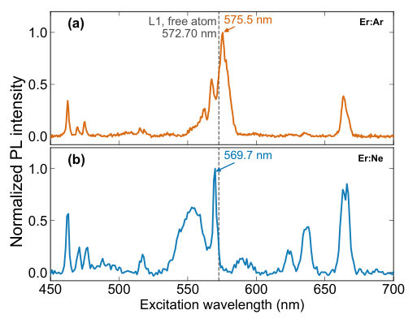
<figcaption class="paper-figure-caption"><b>Fig 3.</b> Fig. 3. PLE spectra of Er in solid (a) Ar and (b) Ne, monitoring the L14 emission at 1437 nm before annealing. Each trace is background-subtracted and peak-normalized, without correction for the wavelength dependence of the excitation power. The excitation bandwidth is about 2 nm. The dashed vertical line marks the free-atom wavelength of L1 (572.70 nm). Arrows mark the excitation wavelengths used for the PL decay measurements, 575.5 nm in Ar and 569.7 nm in Ne, near the maxima of the respective PLE spectra.</figcaption>
</figure>
<figure class="paper-figure-card">
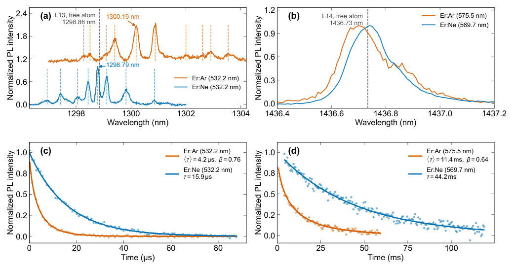
<figcaption class="paper-figure-caption"><b>Fig 4.</b> Fig. 4. Spectra and decay dynamics of the telecom transitions L13 and L14 in as-grown Er:Ar and Er:Ne samples. (a) PL spectra of L13 near 1299 nm in solid Ar and Ne under 532.2 nm excitation. The Ar trace is vertically offset for clarity. Colored dashed lines mark the features listed in Table I, and arrows indicate the detection wavelengths used in (c). (b) PL spectra of L14 near 1437 nm under excitation at 575.5 nm (Ar) and 569.7 nm (Ne). In (a) and (b), spectra are baseline-corrected and peak-normalized, and gray dashed lines mark the free-atom transition wavelengths in air. (c, d) PL decays of L13 and L14, respectively, with time referenced to the end of the excitation gate. Solid lines...</figcaption>
</figure>
<figure class="paper-figure-card">
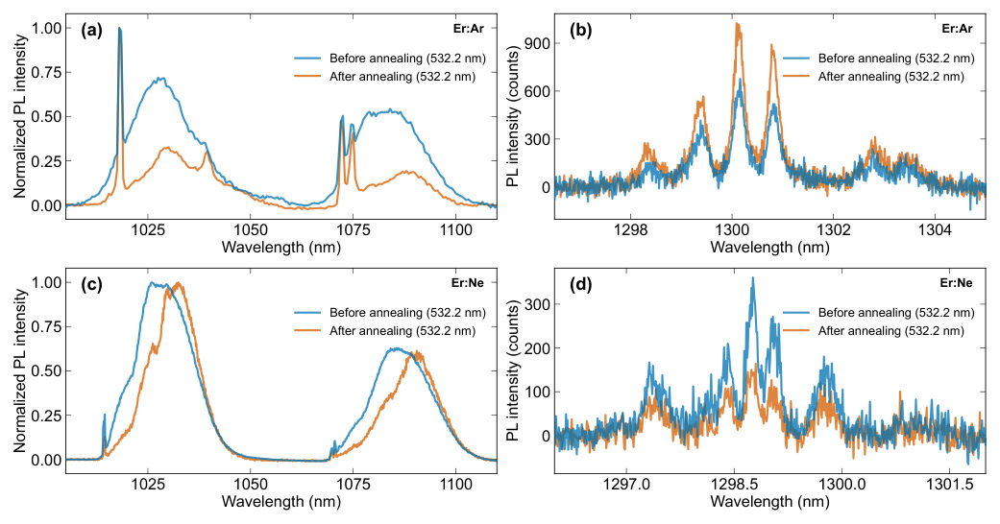
<figcaption class="paper-figure-caption"><b>Fig 5.</b> Fig. 5. Effect of annealing on the PL spectra of Er in solid Ar (a, b) and Ne (c, d) under 532.2 nm excitation. Blue and orange traces show measurements before and after annealing, respectively. (a, c) NIR spectra around L11 and L12, baseline-corrected and peak-normalized to compare the band shapes and the relative prominence of the narrow features. (b, d) Detailed spectra of L13, shown as baseline-subtracted counts without peak normalization. Within each panel, the traces before and after annealing were recorded under the same acquisition conditions, but count scales should not be compared between hosts. Wavelengths in parentheses in the legends give the excitation wavelength.</figcaption>
</figure>
</div>

<p><strong>Summary.</strong> The authors characterized the optical emission of Erbium atoms in solid Neon and Argon matrices using time-resolved PL spectroscopy. They found that the $4f 
ightarrow 4f$ transition in solid Ne exhibits extremely long lifetimes and narrow linewidths, indicating minimal environmental decoherence. This establishes rare-gas solids, particularly Ne, as excellent solid-state hosts for robust, telecom-band quantum emitters.</p>
<p><strong>Why it may be interesting.</strong> This work is highly relevant to AMO physics and quantum optics as it experimentally validates a solid-state platform (RG solids) for achieving long coherence times in atomic emitters, crucial for quantum memory and quantum networking.</p>
<details>
<summary>Detailed structure</summary>
<p><strong>Main problem.</strong> The study aims to characterize the near-infrared, telecom-band optical transitions of Erbium (Er) atoms embedded in rare-gas (RG) solids to determine if these solids are suitable hosts for long-lived quantum emitters.</p>
<p><strong>Main result.</strong> The research demonstrates that Er atoms in solid Ne exhibit exceptionally long photoluminescence lifetimes (up to 79 ms) and narrow spectral features for the $4f 
ightarrow 4f$ transition, establishing RG solids, particularly Ne, as promising platforms for quantum applications.</p>
<p><strong>Method.</strong> The work employed steady-state and time-resolved photoluminescence (PL) spectroscopy on samples of Er co-deposited with solid Ne and solid Ar, measured at cryogenic temperatures.</p>
<p><strong>Model / system.</strong> The physical system involves neutral Er atoms isolated within crystalline matrices of solid Neon (Ne) or solid Argon (Ar). The analysis compares the spectral signatures of the $4f 
ightarrow 5d$ (L13) and $4f 
ightarrow 4f$ (L14) transitions in both hosts.</p>
<p><strong>Key observables.</strong> Near-infrared emission transitions (1000–1500 nm), PL lifetime (up to 79 ms), inhomogeneous linewidth (&lt; 22 GHz), and spectral shifts relative to free-atom values.</p>
<p><strong>Important parameters / regimes.</strong> Cryogenic temperature ($\approx 6$ K); the difference in host perturbation between Ne and Ar; the radiative limit for the PL lifetime.</p>
<p><strong>Assumptions / limitations.</strong> The observed spectral differences are attributed to the differential coupling strength between the $5d$ electron (strong coupling) and the shielded $4f$ electrons (weak coupling) to the host lattice.</p>
<p><strong>Figures summary.</strong> Figure 1(a) shows the experimental setup, and Figure 1(b) provides an energy-level diagram for neutral Er. Figure 2 presents representative PL spectra of Er in solid Ar and Ne.</p>
<p><strong>Paper structure.</strong> The paper proceeds by characterizing the optical transitions in both Ar and Ne, contrasting the highly coupled $5d$ transition (L13) with the weakly coupled, long-lived $4f$ transition (L14). The comparison highlights the superior environment provided by solid Ne.</p>
</details>
<details>
<summary>Abstract</summary>
<p>Rare-earth (RE) atoms, such as erbium (Er), have inner-shell optical transitions in the near-infrared, some of which are in the telecom bands. These transitions are largely insensitive to the host environment due to effective shielding by the filled outer shells. Cryogenic rare-gas (RG) solids, such as solid neon (Ne) and argon (Ar), combine high chemical purity with a nearly nuclear-spin-free environment, making them attractive solid hosts for preserving optical and spin coherence. In this work, we isolate neutral Er atoms in solid Ne and Ar at 6 K and characterize their emission by steady-state and time-resolved photoluminescence (PL) spectroscopy. In both hosts, we observe several near-infrared transitions between 1000--1500 nm, including inner-shell emission in the telecom O and E bands. The $4f \rightarrow 5d$ transition near 1299 nm forms a multiplet of narrow components, consistent with crystal-field splitting, and decays on a microsecond timescale. The $4f \rightarrow 4f$ transition near 1437 nm shows a matrix shift below 1 cm$^{-1}$ in both hosts. In solid Ne, its inhomogeneous linewidth is bounded by the spectrometer resolution to &lt; 22 GHz, and its PL lifetime reaches up to 78.9 ms, close to the estimated radiative limit. Thermal annealing extends the 1437 nm lifetime in Ne and suppresses the phonon sidebands relative to the zero-phonon lines in Ar. These results identify RG solids as promising hosts for long-lived telecom-band Er emission and provide a foundation for future spin-photon interfaces and hybrid quantum architectures.</p>
</details>
<p><sub><a href="#top">↑ back to top</a></sub></p>

<p><a id="paper-2610.00505"></a></p>
<h3 id="walshness-an-intrinsic-neural-network-representability-metric-for-quantum-states"><a href="http://arxiv.org/abs/2610.00505v1">Walshness: an intrinsic neural-network representability metric for quantum states</a></h3>
<p><strong>Authors:</strong> Nisarga Paul, Kehuang Chen, Jessica K. Jiang, Haimeng Zhao, Di Luo<br>
<strong>Type:</strong> theory · <strong>Category:</strong> disordered systems and neural networks · <strong>PDF:</strong> <a href="https://arxiv.org/pdf/2610.00505v1">https://arxiv.org/pdf/2610.00505v1</a><br>
<strong>Analysis basis:</strong> full PDF text, analyzed in chunks
<strong>Topic relevance:</strong> <code>analog quantum simulation</code> <strong>3/5</strong> · <code>methods for driven-dissipative</code> <strong>2/5</strong></p>
<div class="figure-strip-hint">↔ Scroll figures horizontally</div>
<div class="paper-figures-scroll">
<figure class="paper-figure-card">
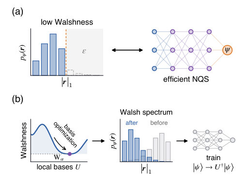
<figcaption class="paper-figure-caption"><b>Fig 1.</b> Figure 1. Walshness. (a) For a quantum state |ψ⟩on n qubits, low Walshness implies the existence of an efficient neural quantum state (NQS) representation in some basis. Conversely, a compact NQS has low Walshness. (b) We pro- vide an algorithm for finding Walshness-minimizing bases and numerically show that they ease NQS training.</figcaption>
</figure>
<figure class="paper-figure-card">
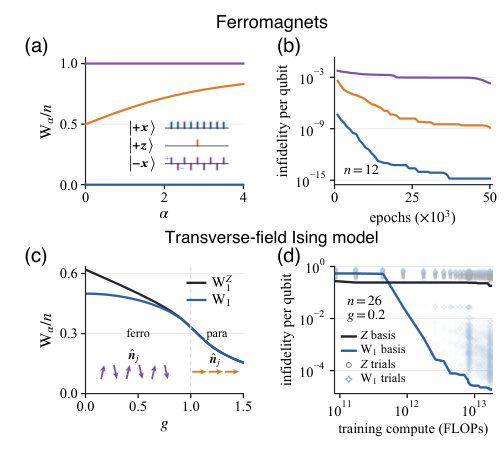
<figcaption class="paper-figure-caption"><b>Fig 2.</b> Figure 2. NQS learning. (a) Fixed-basis Walshness den- sity of |+x⟩, |+z⟩, and |−x⟩ferromagnets. All three have zero intrinsic Walshness. (b) Loss during a common training budget for MLP-NQS fits of these states, using infidelity as loss. Ordering of losses follows that of WZ α. (c) Fixed-basis Walshness density and intrinsic Walshness density at α = 1 for the TFIM ground state. Insets show Wα-minimizing bases (ˆnj,x, ˆnj,z) at g = 0.2 and 1.2. (d) Minimum infidelity per qubit for learning the g = 0.2 TFIM ground state over many trials (with varying MLP architectures, hyperparameters, and epochs [56]) for Walshness minimizing (blue) and computa- tional (black) bases. These data demonstrate...</figcaption>
</figure>
<figure class="paper-figure-card">
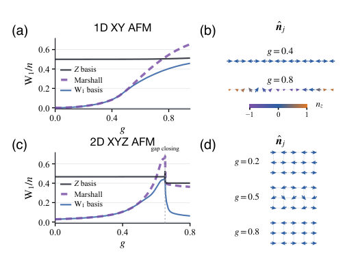
<figcaption class="paper-figure-caption"><b>Fig 3.</b> Figure 3. Walshness and the Marshall sign rule. (a,c) Walshness WZ 1 [U|ψ⟩] in the computational (black), Marshall (purple dashed), and numerically optimized (blue) bases. (a,b) Results for HXY [Eq. (11)], with varying anisotropy g, in the parity-even ground state. (c,d) Results for HXYZ [Eq. (12)], with varying frustration g. Within the exact ground state manifold, we select the state maximizing ⟨X⟩on a corner site of the finite lattice. (b,d) Optimized basis axes at the indicated couplings. Arrows show the xy projections of ˆnj, defined by U † j XjUj = ˆnj · σj.</figcaption>
</figure>
<figure class="paper-figure-card">
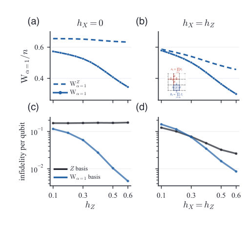
<figcaption class="paper-figure-caption"><b>Fig 4.</b> Figure 4. Mixed-field toric code. (a,b) Z-basis (dashed) and numerically minimized (solid) Walshness at α = 1, along hX = 0 and hX = hZ for the L = 3 torus [n = 18, inset in (b)]. (c,d) Median best infidelity per qubit during 2 · 104</figcaption>
</figure>
<figure class="paper-figure-card">
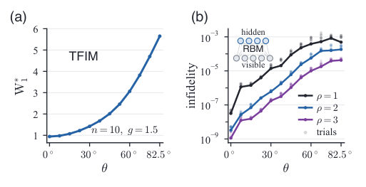
<figcaption class="paper-figure-caption"><b>Fig 5.</b> Figure 5. Multiplicative Walshness and RBM learning. (a) W∗ α for α = 1 and (b) infidelity versus global basis rotation angle θ in the TFIM. Curves show the lowest-energy retained trial after 1000 SR steps, with hidden-unit density ρ = M/n. Data in part reproduced from [45] (see [56]). Increase in W∗ 1 tracks increase in infidelity across θ.</figcaption>
</figure>
</div>

<p><strong>Summary.</strong> The paper introduces Walshness, a novel, intrinsic metric quantifying the complexity of a quantum state's structure relative to its potential representation by a neural network. It rigorously proves that low Walshness guarantees efficient representability by MLPs, providing a theoretical benchmark for quantum state learnability. This framework is successfully applied to analyze ground states of lattice models like the Toric Code, revealing deep connections between quantum phase transitions and information-theoretic complexity.</p>
<p><strong>Why it may be interesting.</strong> This work provides a powerful, intrinsic complexity measure that bridges quantum information theory, condensed matter physics, and machine learning theory. For AMO physicists, it offers a quantitative diagnostic tool to predict the feasibility of simulating complex quantum phases using modern neural network architectures.</p>
<details>
<summary>Detailed structure</summary>
<p><strong>Main problem.</strong> The paper addresses the fundamental question of when and how efficiently quantum many-body states can be represented by Neural Quantum States (NQS), given challenges from nonlinear parameterization and basis dependence.</p>
<p><strong>Main result.</strong> It introduces Walshness, a complexity metric, and proves that a state has an efficient NQS representation if and only if it has bounded Walshness, providing a rigorous link between quantum state structure and machine learning capacity.</p>
<p><strong>Method.</strong> The authors define Walshness using the Walsh-Hadamard transform and establish its intrinsic form by minimizing over local unitaries. They connect this metric to the learnability of MLPs and RBMs via theoretical bounds and variational minimization.</p>
<p><strong>Model / system.</strong> The analysis focuses on general quantum many-body states on $n$ qubits, tested on models like the Transverse-Field Ising Model (TFIM) and the mixed-field Toric Code. The representation tool is the Neural Quantum State (NQS) parameterized by MLPs.</p>
<p><strong>Key observables.</strong> Walshness ($W_\alpha$), Intrinsic Walshness ($W_\alpha$), Infidelity ($\epsilon$), and the energy of a corresponding classical spin model.</p>
<p><strong>Important parameters / regimes.</strong> The system size $n$, the parameter $\alpha$ in Walshness, and the coupling strengths ($h_X, h_Z$) in the Hamiltonian.</p>
<p><strong>Assumptions / limitations.</strong> The connection between low Walshness and efficient MLP representation is established for a truncated state $|	ext{e}\psi
angle$. The analysis often relies on asymptotic scaling arguments.</p>
<p><strong>Figures summary.</strong> Figures illustrate that low Walshness correlates with low training infidelity across various bases (e.g., TFIM, Toric Code). Specific comparisons show that the intrinsic Walshness reveals underlying structural properties, such as divergences related to phase transitions in the 2D Ising model.</p>
<p><strong>Paper structure.</strong> The paper first defines Walshness and proves its connection to NQS representability. It then applies this to specific models (TFIM, Toric Code), deriving closed-form expressions for Walshness related to known statistical physics models (like the 2D Ising model). Finally, it compares the performance of NQS trained using different bases (computational vs. Walshness-optimized) on complex systems.</p>
</details>
<details>
<summary>Abstract</summary>
<p>Neural quantum states (NQS) have emerged as powerful representations of quantum states with rapidly expanding applications across quantum many-body physics. Yet our understanding of when neural networks can efficiently represent physical quantum states remains limited, in part due to the nonlinear parameterization of NQS, the intricate sign structure of quantum states, and the sensitive dependence on basis choice. We introduce Walshness, a complexity metric of a quantum state which quantifies whether it admits a compact neural-network representation. We rigorously prove that a general quantum many-body state admits an efficient NQS representation if and only if it has bounded Walshness for various NQS architectures. We provide an algorithm for finding the optimal basis by minimizing the energy of a corresponding classical spin model. This allows us to empirically improve the learnability of various physical quantum states, including ground states of the transverse-field Ising model and mixed-field toric code, often reducing infidelity by orders of magnitude, and recovers and generalizes the basis choice given by the well-known Marshall sign rule in frustrated antiferromagnets. Our results provide an intrinsic complexity metric for quantum states with provable connections to their neural-network representability.</p>
</details>
<p><sub><a href="#top">↑ back to top</a></sub></p>

<p><a id="paper-2610.00655"></a></p>
<h3 id="fatigue-failure-in-two-dimensional-glasses-under-cyclic-shear-deformation"><a href="http://arxiv.org/abs/2610.00655v1">Fatigue failure in two-dimensional glasses under cyclic shear deformation</a></h3>
<p><strong>Authors:</strong> Himangsu Bhaumik, Srikanth Sastry<br>
<strong>Type:</strong> both · <strong>Category:</strong> disordered systems and neural networks · <strong>PDF:</strong> <a href="https://arxiv.org/pdf/2610.00655v1">https://arxiv.org/pdf/2610.00655v1</a><br>
<strong>Analysis basis:</strong> full PDF text, analyzed in chunks
<strong>Topic relevance:</strong> <code>non-equilibrium universality</code> <strong>3/5</strong> · <code>Frenkel-Kontorova</code> <strong>1/5</strong></p>
<div class="figure-strip-hint">↔ Scroll figures horizontally</div>
<div class="paper-figures-scroll">
<figure class="paper-figure-card">
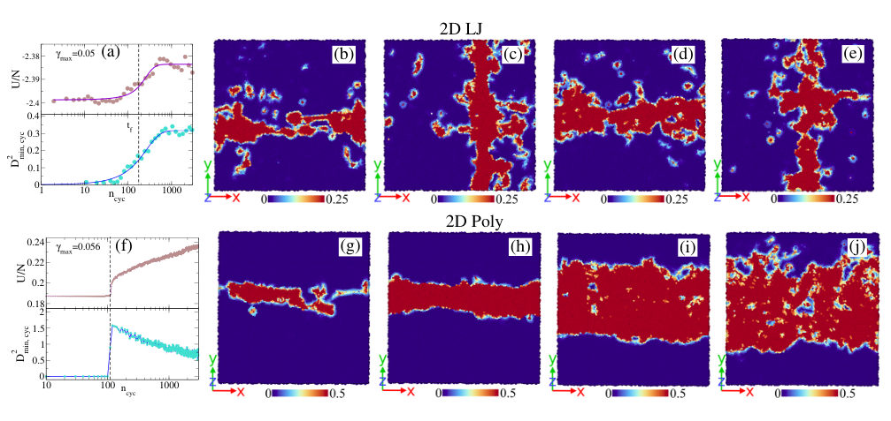
<figcaption class="paper-figure-caption"><b>Fig 1.</b> FIG. 1. Upper panels: 2D LJ model (WAL1), Lower panels: 2D Polydisperse Soft disk model. Evolution of energy (upper inset) and cycle-to-cycle non-affine displacement D2 min,cyc (lower inset) as a function of strain cycle for (a) 2D LJ model (WAL1) and (f) 2D POly model. For the 2D LJ model, both U/N and D2 min,cyc can be well described by a sigmoid function as shown by the solid lines. Inflection points are taken to be the failure times. For the 2D Poly model, there is a sharp change in both U/N and D2 min,cyc during failure. The snapshots of the system coloured by the D2 min,cyc of the particles are presented at different stages of evolution, (b,g) ncyc = tf + 10, (c,h) tf + 100, (d,i) tf...</figcaption>
</figure>
<figure class="paper-figure-card">
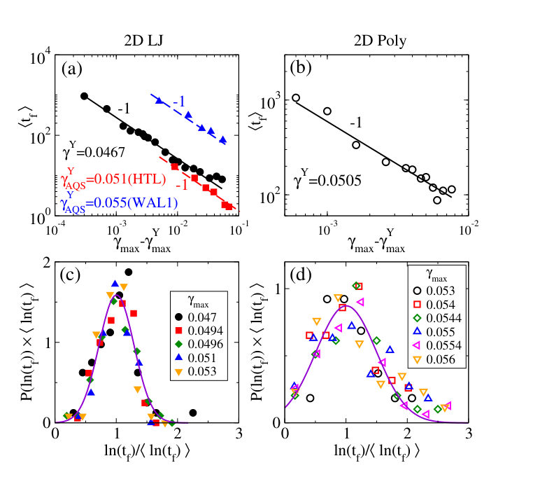
<figcaption class="paper-figure-caption"><b>Fig 2.</b> FIG. 2. Average failure times ⟨tf⟩against (γmax −γY max) for the (a) 2D LJ model and the (b) 2D Poly model. Solid lines are fits to a power-law which indicates that the exponent is −1, for both models. For comparison, results for the athermal quasistatic shear protocol are also shown for the 2D LJ model in (a), based on simulations reported in [29]. The distribution of failure times, for the (c) 2D LJ model and the (d) 2D Poly model, for several strain amplitudes. The distributions exhibit log-normal behaviour, with the width being proportional to the mean, as indicated by the data collapse when the axes are scaled by ⟨ln(tf)⟩.</figcaption>
</figure>
<figure class="paper-figure-card">
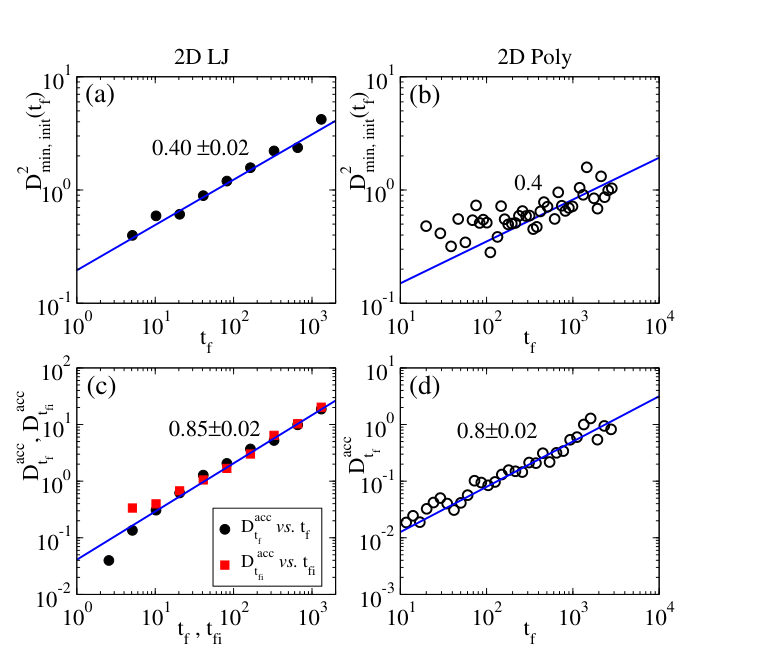
<figcaption class="paper-figure-caption"><b>Fig 3.</b> FIG. 3. Accumulated plasticity D2 min,init (measured in terms of non-affine displacement) as a function of failure time tf for (a) 2D LJ and (b) 2D Poly. Solid lines through data represent power-law scaling D2 min,init ∼t0.4 f for both models. Dissipated work Dacc tf accumulated till failure as a function of failure time tf for (c) 2D LJ and (d) 2D Poly. A power-law Dacc tf ∼t0.8 f is observed for both the models. In (a), (c), and (d), the error bars on the exponent values represent the variation obtained by fitting different portions of the data. In (b), the line is a guide to the eye with slope 0.4.</figcaption>
</figure>
<figure class="paper-figure-card">
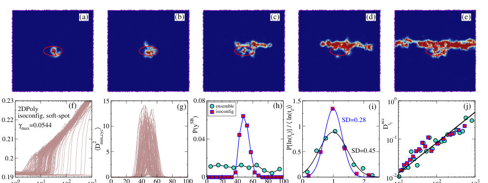
<figcaption class="paper-figure-caption"><b>Fig 4.</b> FIG. 4. Isoconfigurational simulations with a predefined soft spot (2D Poly). The upper panels (a)-(e) show the nucleation of the shear band from the seeded region and the subsequent evolution of plastic rearrangements up to failure. Lower panels: (f) Evolution of potential energy as a function of strain cycles for 200 independent runs with different initial velocities. (g) Cycle-to-cycle non-affine displacement profile at the failure time tf, demonstrating that the shear band formation is spatially localized near the seeded region. (h) Distribution of shear band positions: while unseeded simulations exhibit a broad (nearly uniform) distribution, the seeded isoconfigurational runs show a...</figcaption>
</figure>
</div>

<p><strong>Summary.</strong> This work uses atomistic simulations to study fatigue failure in 2D model glasses under cyclic shear. The key finding is a dimensionality-dependent power-law exponent for the failure time divergence (exponent $\approx -1$ in 2D vs. $-2$ in 3D). The research robustly links this failure time to the scaling of accumulated plastic damage, while also noting that failure timing remains inherently stochastic even when the failure location is controlled.</p>
<p><strong>Why it may be interesting.</strong> The study provides insights into how dimensionality fundamentally alters the critical exponents governing failure in disordered materials, which has parallels in understanding phase transitions or failure mechanisms in complex quantum systems.</p>
<details>
<summary>Detailed structure</summary>
<p><strong>Main problem.</strong> The study investigates the phenomenon of fatigue failure in two-dimensional (2D) model glasses subjected to cyclic shear deformation.</p>
<p><strong>Main result.</strong> The divergence of the failure time as the strain amplitude approaches the limit follows a power law with an exponent of approximately -1 in 2D, which contrasts with the -2 exponent found in 3D systems.</p>
<p><strong>Method.</strong> The research employs atomistic Molecular Dynamics (MD) simulations to model the mechanical response of the glasses under cyclic loading.</p>
<p><strong>Model / system.</strong> The simulations use two specific models: the 2D Lennard-Jones (LJ) mixture potential and a 2D polydisperse soft-disk model. The system is subjected to controlled cyclic shear strain.</p>
<p><strong>Key observables.</strong> Number of cycles to failure (fatigue time), accumulated dissipated work, and non-affine displacements.</p>
<p><strong>Important parameters / regimes.</strong> Cyclic shear strain amplitude ($\gamma_{max}$), temperature ($T$), and the dimensionality (2D vs 3D).</p>
<p><strong>Assumptions / limitations.</strong> The analysis assumes that the failure process is governed by the accumulation of plastic activity, and that the difference in failure exponents between 2D and 3D is due to spatial dimensionality.</p>
<p><strong>Figures summary.</strong> Figures illustrate the power-law divergence of failure time with strain amplitude, the scaling of accumulated damage measures ($D^2_{	ext{min,init}}$ and $D_{	ext{acc}, t_f}$) with failure time, and the effect of seeding localized soft regions on failure location versus timing.</p>
<p><strong>Paper structure.</strong> The paper first establishes the simulation setup for 2D glasses using two models. It then analyzes the power-law scaling of failure time with strain amplitude, highlighting the dimensional difference. Finally, it correlates this failure time with the scaling of accumulated plastic damage measures, while also examining the stochastic nature of failure time variability.</p>
</details>
<details>
<summary>Abstract</summary>
<p>We investigate fatigue failure in two-dimensional (2D) model glasses under cyclic shear deformation using atomistic simulations. We find that the number of cycles to failure diverges as a power law as the strain amplitude approaches the fatigue limit, with an exponent close to $-1$, in contrast to the exponent of $-2$ reported in three dimensions (3D). A failure exponent of $-1$ has also recently been observed in a 2D elastoplastic model, suggesting an interesting dependence on spatial dimensionality that needs to be rationalized. Measures of accumulated plastic activity, including dissipated work and non-affine displacements, exhibit scaling with the failure time that is consistent with results in 3D, and indicate a robust connection between damage accumulation and failure. To probe the origins of the variability of failure times, we perform isoconfigurational {\it seeded} simulations in which a localized soft region is introduced. While such seeding constrains the spatial location of failure, the distribution of failure times remains broad. These findings extend recent results in 3D concerning fatigue failure times to 2D glasses, including their relation to accumulated plasticity and apparent stochasticity, while also revealing a key difference, namely the exponent describing the divergence of the failure times.</p>
</details>
<p><sub><a href="#top">↑ back to top</a></sub></p>

<p><a id="paper-2610.01990"></a></p>
<h3 id="frustration-induced-multiferroicity-in-hauerite-mns2"><a href="http://arxiv.org/abs/2610.01990v1">Frustration-induced multiferroicity in hauerite MnS2</a></h3>
<p><strong>Authors:</strong> Vilmos Kocsis, Harish K. Singh, Kranthi K. Bestha, Yaqian Guo, Maxim Mostovoy, Jeroen van den Brink, Oleg Janson<br>
<strong>Type:</strong> both · <strong>Category:</strong> strongly correlated electrons · <strong>PDF:</strong> <a href="https://arxiv.org/pdf/2610.01990v1">https://arxiv.org/pdf/2610.01990v1</a><br>
<strong>Analysis basis:</strong> full PDF text, analyzed in chunks
<strong>Topic relevance:</strong> <code>analog quantum simulation</code> <strong>3/5</strong> · <code>Keldysh / 2PI / non-Gaussian methods</code> <strong>1/5</strong></p>
<div class="figure-strip-hint">↔ Scroll figures horizontally</div>
<div class="paper-figures-scroll">
<figure class="paper-figure-card">
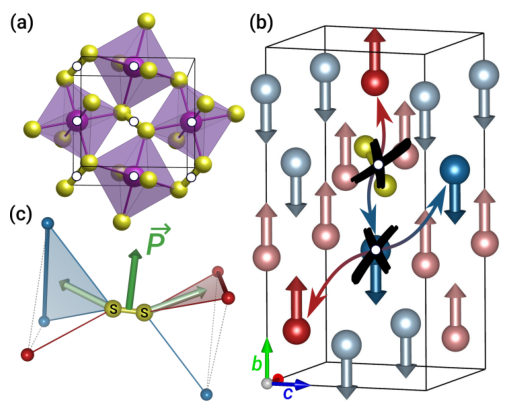
<figcaption class="paper-figure-caption"><b>Fig 1.</b> FIG. 1. Inversion symmetry breaking and emergence of dipole moments on S2 dimers. (a) MnS6 octahedra (violet) and S2 dimers (yellow dumbbells) in the pyrite-type cubic structure of paramagnetic MnS2. Inversion centers (open circles) are located at Mn atoms and midpoints of S2 dimers. (b) The antiferromagnetic order doubles the unit cell and breaks P as illustrated by curvilinear arrows connecting the loci of erst- while inversion centers (crossed-out open circles) with Mn atoms having antiparallel moments. (c) In the magnetically ordered state, both atoms of an S2 dimer have three Mn neigh- bors; two thereof have parallel moments, allowing for a dipole moment on S (green arrow). The...</figcaption>
</figure>
<figure class="paper-figure-card">
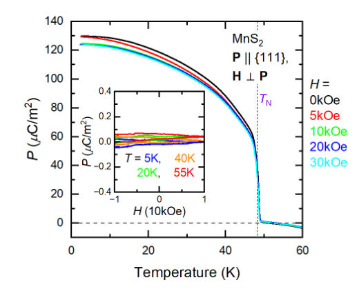
<figcaption class="paper-figure-caption"><b>Fig 2.</b> FIG. 3. Temperature dependence of the ferroelectric polar- ization P along [111] at selected fields. Note that polarization in MnS2 is confined to the c axis, and hence the intrinsic value of P is √</figcaption>
</figure>
<figure class="paper-figure-card">
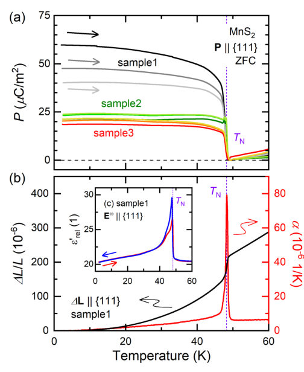
<figcaption class="paper-figure-caption"><b>Fig 3.</b> FIG. 2. Temperature dependence of the (a) zero-field-cooled ferroelectric polarization (P) and (b) the relative length change (∆L/L) and the thermal expansion coefficient (α). Inset (c): Real part of the dielectric constant (ϵ′) of MnS2.</figcaption>
</figure>
<figure class="paper-figure-card">
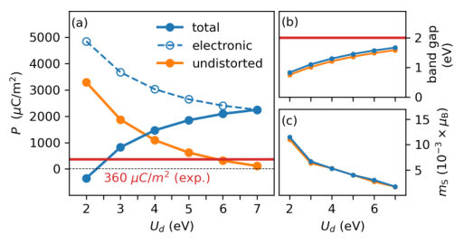
<figcaption class="paper-figure-caption"><b>Fig 4.</b> FIG. 4. Results of GGA+U calculations. (a) Total ferroelec- tric polarization P (blue solid) and its electronic contribution (blue dashed) as a function of the Coulomb repulsion param- eter Ud. For reference, we plot the polarization of the undis- torted structure (orange) which is fully of electronic origin. We further plot the Ud dependence of the band gap (b) and the average absolute magnetic moment on S atoms (c). Ex- perimental estimates are indicated with red lines.</figcaption>
</figure>
<figure class="paper-figure-card">
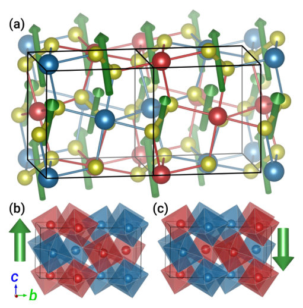
<figcaption class="paper-figure-caption"><b>Fig 5.</b> FIG. 5. Ferroelectricity of MnS2. (a) Spin-up (red) and spin- down (blue) Mn atoms in the magnetic structure of MnS2. Polarization of each S2 dimer is indicated by a green arrow; net electric polarization is along c. (b) and (c) Two magnetic domain structures with opposite polarization. Only magnetic MnS6 octahedra are shown. Slicing both domains in the ac plane (each panel depicts four such slices) reveals that each second slice has opposite orientation in the two magnetic do- mains.</figcaption>
</figure>
</div>

<p><strong>Summary.</strong> This work establishes hauerite MnS2 as a type-II multiferroic material where ferroelectricity emerges directly from its magnetic ordering. The mechanism is microscopically attributed to dipole moments induced on S2 dimers due to magnetic frustration. The study employs both experimental measurements and advanced DFT+U calculations to confirm this coupling and quantify the polarization.</p>
<p><strong>Why it may be interesting.</strong> The strong coupling between magnetism and ferroelectricity in a solid-state material like MnS2 provides a platform for studying emergent quantum phenomena, particularly magnetoelectric coupling mechanisms relevant to correlated electron physics.</p>
<details>
<summary>Detailed structure</summary>
<p><strong>Main problem.</strong> The study aims to demonstrate that hauerite MnS2 is a type-II multiferroic material by understanding the microscopic origin of the ferroelectric polarization coupled to its magnetic ordering.</p>
<p><strong>Main result.</strong> The ferroelectricity arises from the acquisition of a dipole moment on S2 dimers, induced by the frustrated magnetic ordering of neighboring Mn sites, leading to a measurable polarization of up to 360 μC/m^2.</p>
<p><strong>Method.</strong> The research combines experimental measurements (polarization, thermal expansion) with advanced computational techniques, primarily DFT+U calculations, to model the electronic structure and magnetoelectric coupling.</p>
<p><strong>Model / system.</strong> The system is the pyrite-type mineral hauerite MnS2, which is treated as a magnetic insulator with localized S=5/2 moments, exhibiting complex magnetic ordering characterized by two Néel vectors.</p>
<p><strong>Key observables.</strong> Ferroelectric polarization (P), dielectric constant (ε'), thermal expansion coefficient (α), and the total/electronic polarization calculated via DFT+U.</p>
<p><strong>Important parameters / regimes.</strong> The Coulomb repulsion parameter U_d (varied from 2 to 7 eV in calculations) and the magnetic exchange energy scale (setting the domain switching barrier).</p>
<p><strong>Assumptions / limitations.</strong> The analysis assumes that the multiferroicity is fundamentally linked to the symmetry breaking accompanying the magnetic ordering, and DFT+U is used to capture strong electronic correlations.</p>
<p><strong>Figures summary.</strong> Figures illustrate the emergence of dipole moments on S2 dimers upon magnetic ordering, the temperature dependence of polarization and thermal expansion, and the dependence of polarization on the Hubbard U parameter.</p>
<p><strong>Paper structure.</strong> The paper progresses from experimental characterization of the multiferroic state to detailed theoretical modeling using DFT+U, systematically varying parameters to pinpoint the electronic origin of the polarization via S2 dimer dipoles.</p>
</details>
<details>
<summary>Abstract</summary>
<p>Pyrite-type mineral hauerite MnS$_2$ is a magnetic insulator with localized $S=\frac52$ moments. Below 48 K, it develops a collinear antiferromagnetic order, accompanied by unit-cell doubling and breaking the inversion symmetry. We demonstrate that the latter gives rise to a ferroelectric polarization of up to 360 $μ$C/m$^2$ rendering MnS$_2$ a type-II multiferroic. Microscopically, the electronic polarization originates from S$_2$ dimers that acquire a dipole moment induced by the frustrated magnetic ordering of neighboring Mn sites. We show that time-reversal symmetry leaves ferroelectric domains intact, and that domain switching necessitates overcoming a high energy barrier set by the magnetic exchange energy scale.</p>
</details>
<p><sub><a href="#top">↑ back to top</a></sub></p>

<p><a id="paper-2610.00626"></a></p>
<h3 id="mechanism-of-incommensurate-magnetic-order-in-math536math-interplay-of-frustrated-further-neighbor-exchanges-and-bond-directional-anisotropy"><a href="http://arxiv.org/abs/2610.00626v1">Mechanism of Incommensurate Magnetic Order in $\mathrm{BaCo_2(AsO_4)_2}$: Interplay of Frustrated Further-Neighbor Exchanges and Bond-Directional Anisotropy</a></h3>
<p><strong>Authors:</strong> Mohammad-Hossein Zare, Mehdi Biderang, Hamid Mosadeq<br>
<strong>Type:</strong> theory · <strong>Category:</strong> strongly correlated electrons · <strong>PDF:</strong> <a href="https://arxiv.org/pdf/2610.00626v1">https://arxiv.org/pdf/2610.00626v1</a><br>
<strong>Analysis basis:</strong> full PDF text, analyzed in chunks
<strong>Topic relevance:</strong> <code>analog quantum simulation</code> <strong>3/5</strong> · <code>Frenkel-Kontorova</code> <strong>1/5</strong></p>
<div class="figure-strip-hint">↔ Scroll figures horizontally</div>
<div class="paper-figures-scroll">
<figure class="paper-figure-card">
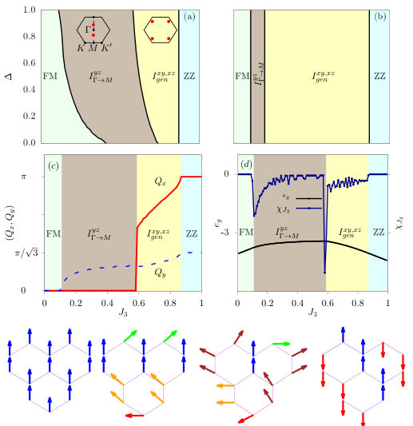
<figcaption class="paper-figure-caption"><b>Fig 1.</b> FIG. 1. Classical phase diagrams and magnetic instabili- ties of the extended honeycomb JKΓΓ′ model at J2 = 0. (a) Phase diagram in the J3–∆plane for the partial-XXZ J1KΓΓ′J∆ 3 model, with isotropic couplings fixed to the ab initio values of BCAO [Eq. (2)]. Inset: The FBZ with high- symmetry points and propagation paths for Q. (b) Sym- metrical phase diagrams for the J∆ 1 KΓΓ′J3 and full-XXZ J∆ 1 KΓΓ′J∆ 3 models. (c) Evolution of the ordering vector Q versus J3 for the J1KΓΓ′J∆ 3 model at anisotropy ∆= 0.1. (d) Ground-state energy per site eg and classical susceptibil- ity χJ3 = −∂2eg/∂J2 3 versus J3 at ∆= 0.1, highlighting sharp first-order anomalies and broad second-order transitions....</figcaption>
</figure>
<figure class="paper-figure-card">
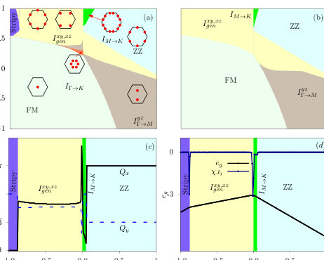
<figcaption class="paper-figure-caption"><b>Fig 2.</b> FIG. 2. (Color online) Classical magnetic phase diagrams and the evolution of modulated instabilities in the J3–J2 plane for the full-XXZ J∆ 1 KΓΓ′J∆ 3 model, derived from an ab ini- tio baseline of BCAO, are presented. The phase landscapes are resolved at fixed XXZ anisotropy limits: (a) the isotropic Heisenberg limit (∆= 1) and (b) the pure planar limit (∆= 0). Panels (c) and (d) depict the evolution of the mag- netic ordering wavevector Q and the classical ground-state en- ergy per site eg, alongside its susceptibility χJ3 = −∂2eg/∂J2 3 as a function of J3, respectively. These are evaluated at fixed J2 = 0.4 and ∆= 0.8 using the Luttinger-Tisza approach.</figcaption>
</figure>
<figure class="paper-figure-card">
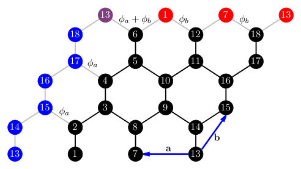
<figcaption class="paper-figure-caption"><b>Fig 3.</b> FIG. 3. (Color online) This schematic illustrates the N = 18 site honeycomb lattice cluster utilized in our finite-system ED calculations. The core physical cluster comprises sites labeled 1 through 18 (black nodes). To simulate an infinite continuum and mitigate finite-size momentum quantization artifacts, TBCs are implemented. Gray links denote bound- ary couplings, across which phase factors ϕa, ϕb, and ϕa + ϕb are accrued during single-particle or spin-multiplet hopping events. Primitive lattice translation vectors are indicated by blue arrows a and b. Blue, red, and purple nodes represent the boundary image sites, which are mapped via their respec- tive translational fluxes.</figcaption>
</figure>
<figure class="paper-figure-card">
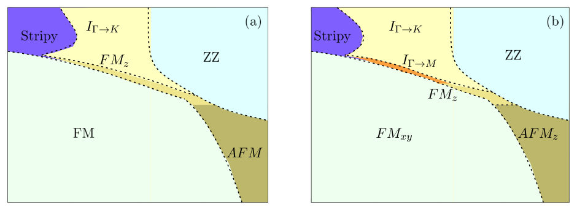
<figcaption class="paper-figure-caption"><b>Fig 4.</b> FIG. 4. (Color online) Quantum ground-state phase diagrams of the extended JKΓΓ′ model on the N = 18 site honeycomb cluster obtained via TBCs-ED calculations in the J3–J2 parameter space. (a) Phase diagram in the isotropic Heisenberg limit (∆= 1), showing broad domains of collinear phases (FM, ZZ, AFM, Stripy), the axially polarized FMz state, and the incommensurate spiral phase IΓ→K. (b) Phase diagram in the easy-plane XY limit (∆= 0), illustrating the planar FMxy and axial AFMz states, along with the quantum stabilization of the IΓ→M spiral phase alongside IΓ→K. Dashed black lines indicate quantum phase boundaries determined from energy derivative anomalies.</figcaption>
</figure>
<figure class="paper-figure-card">
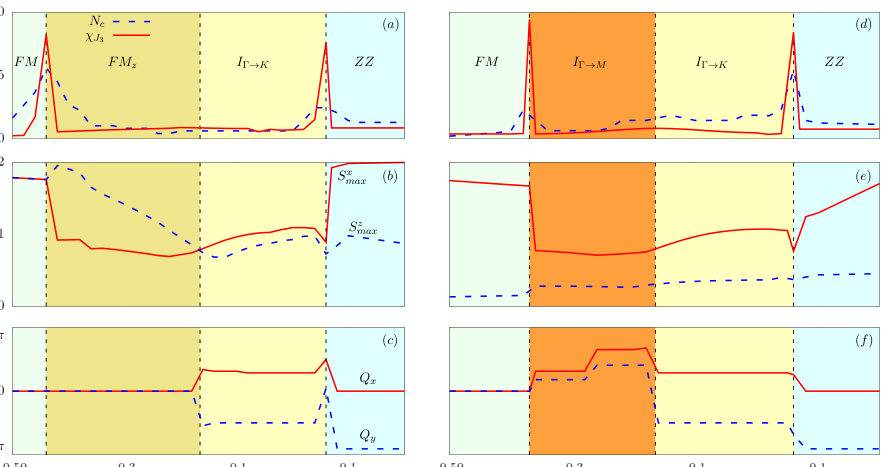
<figcaption class="paper-figure-caption"><b>Fig 5.</b> FIG. 5. (Color online) Diagnostic indicators of quantum phase transitions along representative J3 parameter cuts at a fixed J2 = 0.4. The left column displays results for the isotropic Heisenberg limit (∆= 1), whereas the right column corresponds to the easy-plane limit (∆= 0). (a), (d) Effective magnetic susceptibility χJ3 = −∂2e0/∂J2 3 (solid red curves) and the statistical fluctuation metric Nc (dashed blue curves), where sharp singular peaks unequivocally delineate phase boundaries among competing states (FM, FMz, IΓ→M, IΓ→K, and ZZ). (b), (e) Maxima of the static spin structure factor, Sx max (solid red curves) and Sz max (dashed blue curves), resolving the in-plane versus out-of-plane...</figcaption>
</figure>
</div>

<p><strong>Summary.</strong> This theoretical study investigates the magnetic ordering in $\mathrm{BaCo_2(AsO_4)_2}$ using an extended exchange Hamiltonian. The authors demonstrate that the observed incommensurate magnetic state arises naturally from the combined effects of exchange frustration and bond anisotropies, rather than requiring an overly dominant Kitaev interaction. The work establishes a microscopic foundation for the material's ground state by analyzing both classical and quantum phase boundaries.</p>
<p><strong>Why it may be interesting.</strong> The detailed mapping of magnetic phase diagrams using advanced theoretical tools like the boundary-twist metric provides a rigorous framework for understanding quantum ground states in frustrated magnetic materials, which is relevant to many-body physics.</p>
<details>
<summary>Detailed structure</summary>
<p><strong>Main problem.</strong> The study aims to resolve the microscopic mechanism responsible for the zero-field incommensurate magnetic order observed in the honeycomb cobaltate $\mathrm{BaCo_2(AsO_4)_2}$.</p>
<p><strong>Main result.</strong> The incommensurate spiral phase is stabilized not by an anomalously dominant Kitaev coupling, but by the synergistic interplay between exchange frustration ($J_2, J_3$) and intermediate off-diagonal bond anisotropies ($\Gamma, \Gamma'$).</p>
<p><strong>Method.</strong> The research employs a combination of the analytical Luttinger-Tisza approach for classical phase diagrams and Exact Diagonalization calculations under twisted boundary conditions for quantum analysis.</p>
<p><strong>Model / system.</strong> The system is the honeycomb cobaltate $\mathrm{BaCo_2(AsO_4)_2}$, modeled using an extended $J_1	ext{--}K	ext{--}\Gamma	ext{--}\Gamma'	ext{--}J_2	ext{--}J_3$ Hamiltonian incorporating XXZ-type exchange anisotropies.</p>
<p><strong>Key observables.</strong> Incommensurate spiral phase propagation along the $\Gamma 	o M$ direction; competition between the incommensurate manifold and an out-of-plane ferromagnetic ($\mathrm{FM}_z$) phase; the boundary-twist metric ($N_c$).</p>
<p><strong>Important parameters / regimes.</strong> The relative strengths of the exchange couplings ($J_1, K, \Gamma, \Gamma', J_2, J_3$) and the XXZ anisotropy factor ($\Delta_n$).</p>
<p><strong>Assumptions / limitations.</strong> The analysis assumes that the essential physics is governed by the interplay of specific exchange anisotropies and frustration, and that $ab$ initio calculations constrain the nearest-neighbor parameters.</p>
<p><strong>Figures summary.</strong> The notes describe the mapping of classical and quantum phase diagrams across the $(J_2, J_3)$ parameter space, showing the evolution of the ordering wavevector $\mathbf{Q}$ with $J_3$.</p>
<p><strong>Paper structure.</strong> The paper systematically analyzes the Hamiltonian using the Luttinger-Tisza method to map classical ground states, followed by quantum analysis using Exact Diagonalization and the boundary-twist metric to distinguish between different magnetic phases.</p>
</details>
<details>
<summary>Abstract</summary>
<p>The microscopic mechanism governing the zero-field incommensurate magnetic order in the honeycomb cobaltate $\mathrm{BaCo}_2(\mathrm{AsO}_4)_2$ remains a significant unresolved problem, particularly concerning the relative contributions of bond-directional Kitaev-type interactions and exchange frustration. This study investigates an extended $J_1\text{--}K\text{--}Γ\text{--}Γ'\text{--}J_2\text{--}J_3$ model, which incorporates XXZ-type exchange anisotropies on the honeycomb lattice. Nearest-neighbor parameters are constrained by ab initio electronic structure calculations. By integrating the analytical Luttinger-Tisza approach with exact diagonalization calculations under twisted boundary conditions, we delineate the classical and quantum phase diagrams across the $(J_2, J_3)$ parameter space. We demonstrate that the stabilization of the experimentally observed incommensurate spiral phase, propagating along the $Γ\to M$ direction, does not necessitate an anomalously dominant Kitaev coupling. Instead, this phase arises naturally from the synergistic interplay between exchange frustration, driven by further-neighbor couplings ($J_2, J_3$), and intermediate off-diagonal bond anisotropies ($Γ, Γ'$). In the quantum regime, we elucidate the competition between this incommensurate manifold and an out-of-plane ferromagnetic ($\mathrm{FM}_z$) phase, which is selectively stabilized via a quantum order-by-disorder mechanism. Our findings reconcile conflicting interpretations of the magnetic interactions in $\mathrm{BaCo}_2(\mathrm{AsO}_4)_2$ and establish the microscopic origin and stability range of its incommensurate ground state.</p>
</details>
<p><sub><a href="#top">↑ back to top</a></sub></p>

<p><a id="paper-2610.00832"></a></p>
<h3 id="remote-state-preparation-of-a-single-spin-state-via-hybrid-spin-photon-entanglement"><a href="http://arxiv.org/abs/2610.00832v1">Remote state preparation of a single-spin state via hybrid spin-photon entanglement</a></h3>
<p><strong>Authors:</strong> Yunge Jiang, Yehan Yu, Lili Song, Yan Mu, Chaoyun Peng, Mingfeng Wang<br>
<strong>Type:</strong> theory · <strong>Category:</strong> quantum information and computing · <strong>PDF:</strong> <a href="https://arxiv.org/pdf/2610.00832v1">https://arxiv.org/pdf/2610.00832v1</a><br>
<strong>Analysis basis:</strong> full PDF text, analyzed in chunks
<strong>Topic relevance:</strong> <code>quantum measurements</code> <strong>3/5</strong> · <code>analog quantum simulation</code> <strong>1/5</strong></p>
<div class="figure-strip-hint">↔ Scroll figures horizontally</div>
<div class="paper-figures-scroll">
<figure class="paper-figure-card">
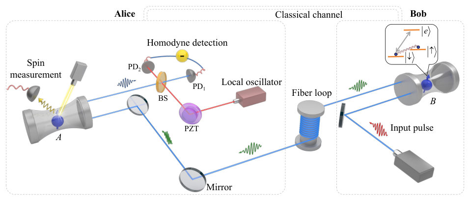
<figcaption class="paper-figure-caption"><b>Fig 1.</b> FIG. 1. Schematic illustration of spin RSP based on hybrid spin-photon entanglement. A single Λ-type spin B is confined in a high-finesse optical cavity at Bob’s site, which is resonant with the |↓⟩↔|e⟩transition and far detuned from the |↑⟩↔|e⟩ transition. An optical pulse initially prepared in a coherent state is reflected from the spin-cavity system, resulting in a hybrid spin-photon entangled state. The optical pulse carrying the quantum correlations is transmitted through an optical fiber to Alice—the receiving party, where it enters a second cavity with an auxiliary electron spin A and interacts via linear cavity quantum electrodynamics. Projective measurements are performed on the...</figcaption>
</figure>
<figure class="paper-figure-card">
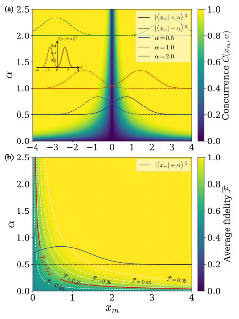
<figcaption class="paper-figure-caption"><b>Fig 2.</b> FIG. 2. (a) Concurrence as a function of the coherent-state amplitude α and the measurement outcome xm. The solid and dashed curves show the position-quadrature distributions of the coherent states |α⟩and |−α⟩, respectively. The inset shows the amplitudes of the states |±α⟩in the x basis for α = 1. Different values of α yield the same amplitude pro- files, differing only in the positions of the wave-packet centers. (b) Average fidelity of the RSP protocol as a function of the coherent-state amplitude |α| and the measurement outcome xm. The solid red contour marks the classical benchmark of 3/4, while the solid blue curve shows the position-quadrature distribution of the coherent state for α...</figcaption>
</figure>
<figure class="paper-figure-card">
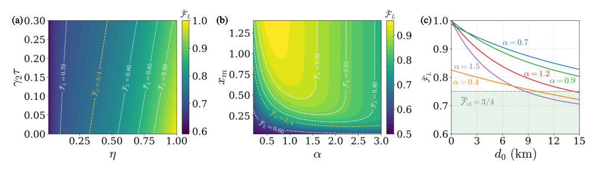
<figcaption class="paper-figure-caption"><b>Fig 3.</b> FIG. 3. (a) Average fidelity of the RSP protocol as a function of the transmittance η and the dephasing γ2τ for α = 1 and xm = √</figcaption>
</figure>
<figure class="paper-figure-card">
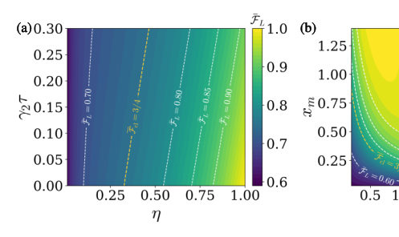
<figcaption class="paper-figure-caption"><b>Fig 4.</b> Figure 3(a) illustrates the effects of different noise sources on the performance of the protocol. It can be seen that fiber loss has a more pronounced effect than atomic de- phasing. In Fig. 3(b), we also show the protocol perfor- mance for different values of the coherent amplitude α. For a given dephasing rate, the protocol exhibits an op- timal value of α. This behavior originates from the com- petition between the effects of the coherent amplitude in the absence and presence of channel loss. In the absence of fiber loss, increasing α generally improves the proto- col performance, whereas in the presence of channel loss, smaller values of α are more favorable. As a result, an optimal...</figcaption>
</figure>
</div>

<p><strong>Summary.</strong> This work proposes a robust remote state preparation protocol for a single-spin qubit by leveraging hybrid entanglement between the spin and a coherent light pulse. By employing a novel measurement scheme involving homodyne detection on the light field and a spin measurement, the protocol avoids difficult direct measurements on non-orthogonal coherent states. The results show high fidelity achievable over long distances, making it a promising tool for quantum communication networks.</p>
<p><strong>Why it may be interesting.</strong> It provides a concrete, loss-tolerant protocol for quantum state transfer that utilizes continuous variables (coherent states) in a solid-state platform, bridging quantum optics and quantum information theory.</p>
<details>
<summary>Detailed structure</summary>
<p><strong>Main problem.</strong> The paper addresses the challenge of remotely preparing an unknown single-spin quantum state using hybrid entanglement between an electron spin and a coherent light pulse.</p>
<p><strong>Main result.</strong> The proposed protocol achieves deterministic state preparation in the ideal limit using only one bit of classical communication, with the fidelity remaining above the classical benchmark over tens of kilometers for relevant parameters.</p>
<p><strong>Method.</strong> The authors circumvent conventional measurement difficulties by coupling the transmitted pulse to an auxiliary spin, followed by homodyne detection and a spin projective measurement.</p>
<p><strong>Model / system.</strong> The system involves a stationary electron-spin qubit coupled to a high-finesse optical cavity, generating hybrid entanglement with a propagating coherent-state light pulse.</p>
<p><strong>Key observables.</strong> RSP fidelity ($F$), Concurrence ($C$), and the coherent-state overlap ($\langle \alpha | -\alpha 
angle$).</p>
<p><strong>Important parameters / regimes.</strong> Coherent-state amplitude ($\alpha$), fiber loss, and spin dephasing rates.</p>
<p><strong>Assumptions / limitations.</strong> The analysis considers the non-orthogonality of coherent states and models the process using a hybrid spin-photon entanglement scheme.</p>
<p><strong>Figures summary.</strong> Figure 1 schematically illustrates the spin RSP process: entanglement generation via reflection at the spin-cavity system, followed by transmission and projective measurements at the receiving end.</p>
<p><strong>Paper structure.</strong> The paper introduces the RSP protocol using hybrid entanglement, details the measurement scheme involving homodyne detection and an auxiliary spin, analyzes the fidelity dependence on system parameters, and concludes by comparing results to the classical benchmark.</p>
</details>
<details>
<summary>Abstract</summary>
<p>Remote state preparation is a fundamental quantum-information protocol that exploits prior knowledge of a target state to reduce the communication resources required for quantum-state distribution. Here, we propose a remote-state-preparation protocol for a stationary electron-spin qubit using hybrid entanglement between the electron spin and a coherent-state light pulse, generated by spin-dependent reflection from a spin-cavity system. Unlike single-photon encodings, the coherent-state encoding is naturally tolerant of photon loss: a loss channel attenuates the coherent-state amplitude, leading to a gradual reduction in preparation fidelity rather than probabilistic protocol failure. The central difficulty---implementing the projection onto superpositions of nonorthogonal coherent states required in the conventional protocol---is circumvented by coupling the transmitted pulse to an auxiliary spin, followed by homodyne detection and a spin projective measurement. The protocol therefore avoids direct coherent-state-superposition measurements and photon-number-resolving detection. In the ideal limit, deterministic preparation of a particular class of target states can be achieved using only one bit of classical communication. We analytically quantify the effects of coherent-state nonorthogonality, fiber loss, and spin dephasing on the preparation fidelity. Increasing the coherent-state amplitude improves state distinguishability and hence the preparation fidelity, but also enhances which-branch information leakage caused by photon loss, resulting in an optimal amplitude at each transmission distance. For experimentally relevant parameters, the optimized average fidelity remains well above the classical benchmark over distances of tens of kilometers. We also discuss a possible implementation using diamond nitrogen-vacancy centers.</p>
</details>
<p><sub><a href="#top">↑ back to top</a></sub></p>

<p><a id="paper-2610.00857"></a></p>
<h3 id="study-of-quantum-turbulence-by-vortex-antivortex-dynamics-in-dipolar-becs"><a href="http://arxiv.org/abs/2610.00857v1">Study of quantum turbulence by vortex-antivortex dynamics in dipolar BECs</a></h3>
<p><strong>Authors:</strong> S. Sabari, Lauro Tomio<br>
<strong>Type:</strong> theory · <strong>Category:</strong> quantum gases · <strong>PDF:</strong> <a href="https://arxiv.org/pdf/2610.00857v1">https://arxiv.org/pdf/2610.00857v1</a><br>
<strong>Analysis basis:</strong> full PDF text, analyzed in chunks
<strong>Topic relevance:</strong> <code>analog quantum simulation</code> <strong>3/5</strong> · <code>non-equilibrium universality</code> <strong>1/5</strong></p>
<div class="figure-strip-hint">↔ Scroll figures horizontally</div>
<div class="paper-figures-scroll">
<figure class="paper-figure-card">
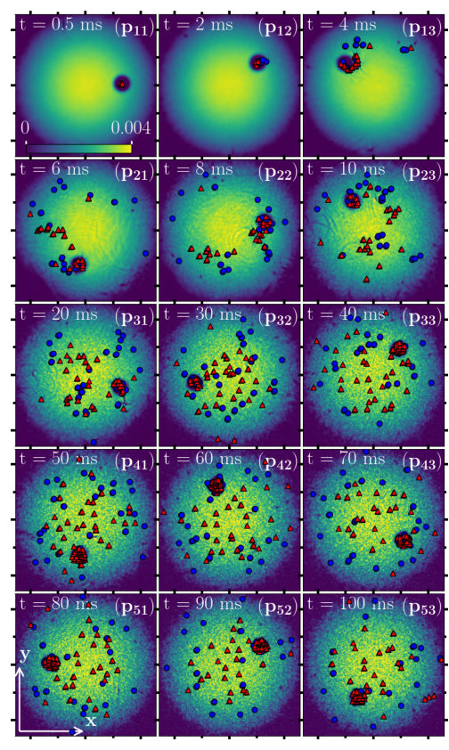
<figcaption class="paper-figure-caption"><b>Fig 1.</b> FIG. 1. (Color online) Column-density evolution for a dipo- lar BEC continuously stirred by a rotating Gaussian obsta- cle (Case 1). Parameters: N = 2.5 × 104, as = 100 a0, add = 131 a0, A0 = 300 ℏωρ, σ = 0.7 ℓρ, r0 = 6.5 ℓρ, ν0 = 1.0 rad/ms, and tacc = 3 ms. The 5×3 panels correspond to t = 0.5, 2, 4, 6, 8, 10, 20, 30, 40, 50, 60, 70, 80, 90, and 100 ms. Vortices appear as dark density holes. The first vortex pairs exit the obstacle at t ∼3 ms, becoming visible in the t = 4 ms panel. By t ∼50 ms, local triangular-like ordering develops in selected regions of the condensate, rather than a globally ordered lattice. Insets in the t = 40 ms and t = 50 ms pan- els show the vortex positions...</figcaption>
</figure>
<figure class="paper-figure-card">
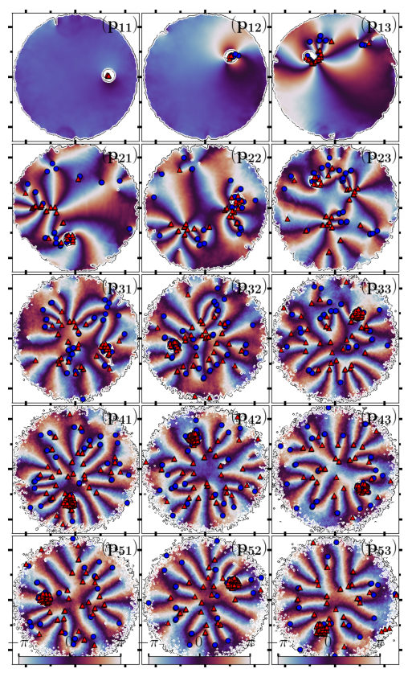
<figcaption class="paper-figure-caption"><b>Fig 2.</b> FIG. 2. (Color online) Phase evolution corresponding to Fig. 1 (Case 1). Vortices appear as 2π phase dislocations. The phase maps confirm nucleation at t ∼8-10 ms, a disordered phase at 20-40 ms, and gradual ordering into a triangular vortex lattice by t ∼50 ms.</figcaption>
</figure>
<figure class="paper-figure-card">
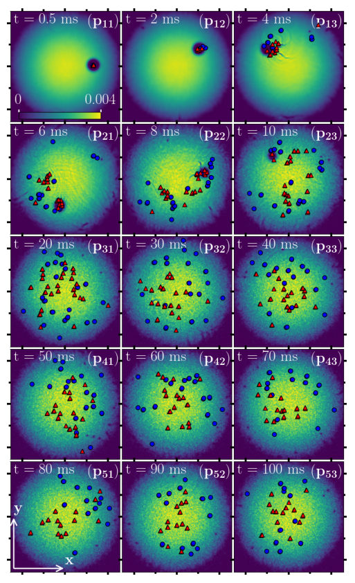
<figcaption class="paper-figure-caption"><b>Fig 3.</b> FIG. 3. (Color online) Column-density evolution for a dipolar BEC in which the rotating Gaussian obstacle is re- moved at t = 15 ms (Case 2). The amplitude ramps linearly, A(t) = A0(1 −t/15) for t ≤15 ms, and is zero thereafter; all other parameters are as in Fig. 1. The first vortex pairs exit the obstacle at t ∼3 ms and proliferate during the stir- ring phase (t ≲15 ms). After obstacle removal, the vortex array evolves freely. By t ∼50 ms, local triangular-like or- dering emerges in selected regions of the condensate, with- out the formation of a globally ordered lattice. No decay of the vortex population is observed up to 100 ms. Insets at t = 40 ms and t = 50 ms show the vortex...</figcaption>
</figure>
<figure class="paper-figure-card">
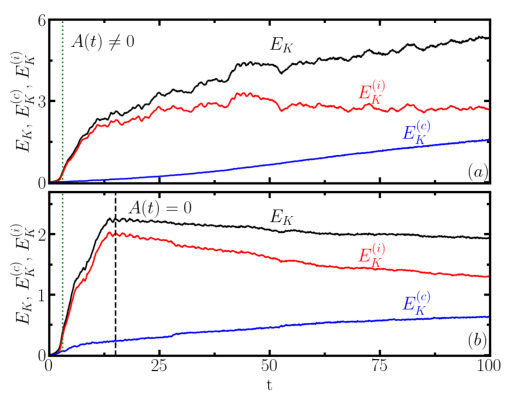
<figcaption class="paper-figure-caption"><b>Fig 4.</b> FIG. 5. (Color online) Time evolution of the kinetic en- ergy components for (a) Case 1 (continuous stirring) and (b) Case 2 (obstacle removal at t = 15 ms). Black solid curves: total kinetic energy (EK). Blue dashed curves: compress- ible kinetic energy (E(c) K ), associated with sound waves and phonons. Red dotted curves: incompressible kinetic energy (E(i) K ), associated with vortex motion. The vertical dashed line at t = 15 ms in panel (b) marks the obstacle removal time. The smooth angular velocity ramp (tacc = 3 ms) is ac- tive in both cases for t &lt; 3 ms.</figcaption>
</figure>
<figure class="paper-figure-card">
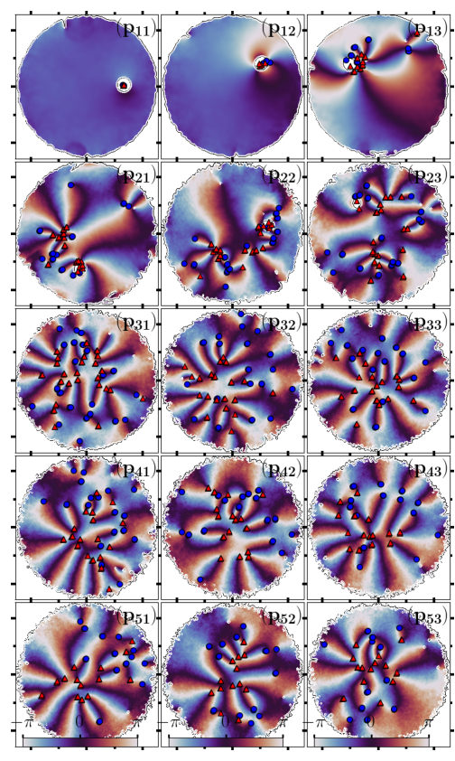
<figcaption class="paper-figure-caption"><b>Fig 5.</b> FIG. 4. (Color online) Phase evolution corresponding to Fig. 3 (Case 2). Phase singularities nucleate before t = 15 ms and persist after obstacle removal. The free evolution allows the vortex ensemble to rearrange into an ordered lattice by t ∼50 ms, as confirmed by the regular arrangement of 2π phase dislocations.</figcaption>
</figure>
</div>

<p><strong>Summary.</strong> This paper numerically investigates quantum turbulence in dipolar Bose-Einstein condensates by analyzing vortex dynamics under two different stirring protocols. The key findings demonstrate that dipolar interactions stabilize vortex pairs against annihilation and induce local crystalline ordering. The results establish a controlled theoretical benchmark for future experimental studies on anisotropic quantum fluids.</p>
<p><strong>Why it may be interesting.</strong> This work provides a controlled, theoretically modeled platform to study quantum turbulence in systems with long-range anisotropic interactions, which is crucial for understanding superfluid dynamics in dipolar quantum gases.</p>
<details>
<summary>Detailed structure</summary>
<p><strong>Main problem.</strong> The study investigates vortex nucleation, dynamics, and the resulting quantum turbulence in dipolar Bose-Einstein condensates (BECs).</p>
<p><strong>Main result.</strong> The research shows that dipolar interactions strongly suppress vortex-antivortex annihilation, and both stirring protocols lead to local triangular ordering with clear dipolar signatures.</p>
<p><strong>Method.</strong> Numerical simulations solving the time-dependent Gross-Pitaevskii equation using the split-step Crank-Nicolson method.</p>
<p><strong>Model / system.</strong> The system is a dipolar BEC, modeled by the GP equation, and is subjected to controlled stirring via a rotating Gaussian obstacle potential. The study compares continuous stirring versus controlled obstacle removal.</p>
<p><strong>Key observables.</strong> Vortex population dynamics, local triangular ordering, kinetic energy decomposition ($E_c$ vs $E_i$), and the energy spectrum $E_i(k)$ adherence to Kolmogorov scaling.</p>
<p><strong>Important parameters / regimes.</strong> The study uses specific parameters for dipolar interactions ($a_{dd} = 131 a_0$) and compares two stirring protocols (constant amplitude vs. linear ramp-down).</p>
<p><strong>Assumptions / limitations.</strong> The use of a smooth angular velocity ramp ($ ext{tacc} = 3$ ms) is employed to suppress spurious phonon excitations.</p>
<p><strong>Figures summary.</strong> Figures illustrate column-density and phase evolution for both stirring cases, and show the time evolution of total, compressible, and incompressible kinetic energy components.</p>
<p><strong>Paper structure.</strong> The paper compares two stirring protocols (Case 1: continuous stirring; Case 2: obstacle removal) to study vortex dynamics, analyzing energy spectra and vortex stability over time.</p>
</details>
<details>
<summary>Abstract</summary>
<p>We investigate vortex nucleation and dynamics in a dipolar Bose-Einstein condensate stirred by a rotating Gaussian obstacle. Two stirring protocols are compared: continuous stirring with constant amplitude (Case 1), and obstacle removal at $t = 15$ ms with linear amplitude ramp-down (Case 2). In both cases, a smooth angular velocity ramp ($t_{\text{acc}} = 3$ ms) suppresses spurious phonon excitations. The first vortex pairs exit the obstacle at $t \sim 3$ ms, and by $t \sim 8$ - $10$ ms the individual vortices and antivortices are fully resolved in the phase maps. Case 1 yields a vortex population that grows up to $t \sim 40$ ms and then roughly saturates, while Case 2 yields a population that peaks around $t \sim 15$ - $25$ ms and then decreases. Remarkably, both protocols lead to local triangular-like ordering in selected regions of the condensate by $t \sim 50$ ms, exhibiting clear dipolar signatures: elliptical distortion and elongated vortex cores along the polarization axis. The mixed vortex-antivortex population remains stable up to $100$ ms with no observable annihilation, indicating that dipolar interactions strongly suppress vortex decay. Kinetic energy decomposition confirms that incompressible (vortex) energy dominates at late times. These results establish a controlled platform for vortex studies in dipolar superfluids and provide benchmarks for future experiments on quantum turbulence with long-range anisotropic interactions.</p>
</details>
<p><sub><a href="#top">↑ back to top</a></sub></p>

<p><a id="paper-2610.00548"></a></p>
<h3 id="a-polynomial-time-classical-sampler-for-noisy-quantum-circuits-from-statistical-mechanics"><a href="http://arxiv.org/abs/2610.00548v1">A polynomial-time classical sampler for noisy quantum circuits from statistical mechanics</a></h3>
<p><strong>Authors:</strong> Jon Nelson, Joel Rajakumar, Chao Yin, Yifan F. Zhang, Michael J. Gullans<br>
<strong>Type:</strong> theory · <strong>Category:</strong> numerical methods · <strong>PDF:</strong> <a href="https://arxiv.org/pdf/2610.00548v1">https://arxiv.org/pdf/2610.00548v1</a><br>
<strong>Analysis basis:</strong> full PDF text, analyzed in chunks
<strong>Topic relevance:</strong> <code>methods for driven-dissipative</code> <strong>3/5</strong></p>
<div class="figure-strip-hint">↔ Scroll figures horizontally</div>
<div class="paper-figures-scroll">
<figure class="paper-figure-card">
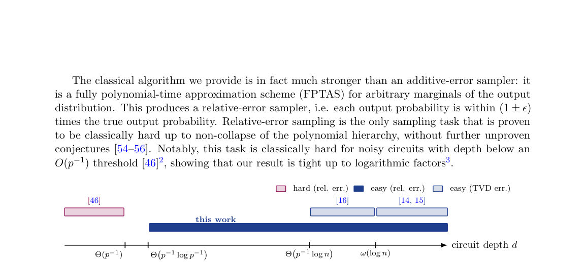
<figcaption class="paper-figure-caption"><b>Fig 1.</b> Figure 1: Known complexity regimes as a function of noisy circuit depth. Prior work appears in the top row and our result is in the lower row. Light red denotes relative-error hardness, light blue denotes total-variation-distance classical simulability, and solid blue denotes relative-error classical simulability.</figcaption>
</figure>
<figure class="paper-figure-card">
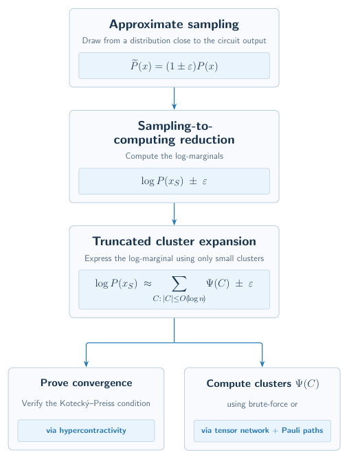
<figcaption class="paper-figure-caption"><b>Fig 2.</b> Figure 2: Overview of the proof strategy. The sampling problem reduces to computing log-marginals (section 2, section B), which are approximated by a truncated cluster expansion (section 4). Hypercontractivity proves convergence (section 5), while tensor-network and Pauli-path methods compute the individual cluster contributions (section A).</figcaption>
</figure>
<figure class="paper-figure-card">
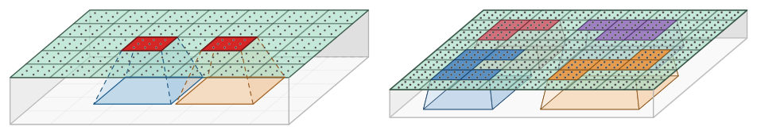
<figcaption class="paper-figure-caption"><b>Fig 3.</b> Figure 3: The coarse-grained geometry. (a) shows that the backward light-cones of any two non- adjacent blocks are disjoint. (b) depicts a collection of compatible polymers which are disjoint connected sets of blocks. The dots denote physical qubits within each coarse-grained block.</figcaption>
</figure>
<figure class="paper-figure-card">
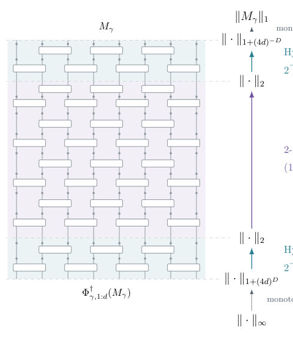
<figcaption class="paper-figure-caption"><b>Fig 4.</b> Figure 4: Illustration of norm conversions and applications of contractivity / hypercontractivity at different layers of the circuit.</figcaption>
</figure>
</div>

<p><strong>Summary.</strong> This paper develops a polynomial-time classical sampler for noisy quantum circuits by mapping the problem onto a polymer model in statistical mechanics. Using cluster expansion and hypercontractivity, the authors prove that noise accumulation at a specific depth threshold allows for efficient classical simulation. This result helps delineate the fundamental limits of quantum advantage by characterizing when noise renders quantum computation classically tractable.</p>
<p><strong>Why it may be interesting.</strong> This work provides a concrete, mathematically rigorous boundary for when classical simulation can efficiently handle noise in quantum computation, directly impacting the understanding of quantum advantage.</p>
<details>
<summary>Detailed structure</summary>
<p><strong>Main problem.</strong> Developing efficient classical simulation algorithms to sample the output state of noisy quantum circuits, thereby establishing the limits of quantum advantage.</p>
<p><strong>Main result.</strong> The authors prove that geometrically local circuits with unital operations and single-qubit depolarizing noise can be sampled in polynomial time if the circuit depth exceeds a critical threshold of $\Omega(p^{-1} \log p^{-1})$.</p>
<p><strong>Method.</strong> The approach maps the quantum state problem to a polymer model in statistical mechanics, utilizing a convergent cluster expansion combined with hypercontractivity bounds.</p>
<p><strong>Model / system.</strong> The system is a noisy quantum circuit composed of geometrically local circuits, unital operations, and interspersed single-qubit depolarizing noise. The analysis is framed in terms of approximating marginal probabilities of the final state.</p>
<p><strong>Key observables.</strong> The output state distribution and the marginal probabilities of the circuit's final state.</p>
<p><strong>Important parameters / regimes.</strong> Noise strength $p$, circuit depth $d$, and the critical depth threshold $d_{crit} = \Omega(p^{-1} \log p^{-1})$.</p>
<p><strong>Assumptions / limitations.</strong> The result is restricted to geometrically local circuits, and the analysis relies on mapping the problem to a polymer model suitable for cluster expansion techniques.</p>
<p><strong>Figures summary.</strong> Figure 1 compares known complexity regimes for noisy circuit depth. Figure 2 illustrates the proof strategy: sampling $
ightarrow$ log-marginals $
ightarrow$ truncated cluster expansion $
ightarrow$ convergence proof $
ightarrow$ cluster computation.</p>
<p><strong>Paper structure.</strong> The paper develops the theory by first establishing the connection to polymer models, then applying cluster expansion techniques, and finally deriving the polynomial-time approximation scheme (FPTAS) for the marginal probabilities.</p>
</details>
<details>
<summary>Abstract</summary>
<p>Developing classical simulation algorithms for noisy quantum circuits is essential to delineating the limits of quantum advantage. Existing classical sampling approaches for general circuits require circuit depths to grow logarithmically with system size, so that noise drives the global output state close to a trivial state. Here we show that local accumulation of noise at a depth independent of system size is already sufficient. Specifically, we prove that any geometrically local circuit composed of unital operations and interspersed with single-qubit depolarizing noise of strength $p$ after $Ω(p^{-1} \log p^{-1})$ depth can be approximately sampled from a polynomial-time classical computer. Our proof maps the output state of the circuit to a polymer model in statistical mechanics, and combines a convergent cluster expansion with hypercontractivity of the depolarizing channel.</p>
</details>
<p><sub><a href="#top">↑ back to top</a></sub></p>

<p><a id="paper-2610.01217"></a></p>
<h3 id="composite-fermions-in-ideal-chern-bands"><a href="http://arxiv.org/abs/2610.01217v1">Composite fermions in ideal Chern bands</a></h3>
<p><strong>Authors:</strong> Songyang Pu, Liangtao Peng, Shaffique Adam<br>
<strong>Type:</strong> theory · <strong>Category:</strong> strongly correlated electrons · <strong>PDF:</strong> <a href="https://arxiv.org/pdf/2610.01217v1">https://arxiv.org/pdf/2610.01217v1</a><br>
<strong>Analysis basis:</strong> full PDF text, analyzed in chunks
<strong>Topic relevance:</strong> <code>analog quantum simulation</code> <strong>3/5</strong></p>
<div class="figure-strip-hint">↔ Scroll figures horizontally</div>
<div class="paper-figures-scroll">
<figure class="paper-figure-card">
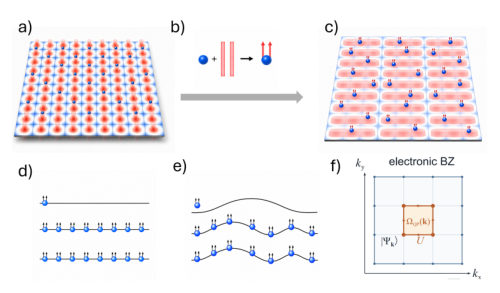
<figcaption class="paper-figure-caption"><b>Fig 1.</b> FIG. 1. Illustration of our model. (a) Model system in which each unit cell contains one unit of magnetic flux, distributed unevenly within the cell. (b) Each electron is combined with two magnetic vortices to form a composite fermion. (c) At one-third filling, this attachment leaves one unit of magnetic flux for every three original unit cells, so the effective lat- tice becomes three times larger in one direction. (d) In an ordinary magnetic field, the allowed states of these quasipar- ticles have the same energy, giving flat quasiparticle bands. (e) In a crystal that reproduces the same quantum behav- ior without an external magnetic field, these states instead acquire different energies...</figcaption>
</figure>
<figure class="paper-figure-card">
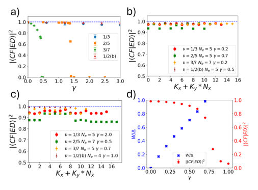
<figcaption class="paper-figure-caption"><b>Fig 2.</b> FIG. 2. (a) The squared overlaps between the exact ground states and composite fermion ground states. We choose Ne = 5 for ν = 1/3, 1/2 and Ne = 6 for ν = 2/5, 3/7 (We only choose one momentum sector for each filling.) The ν = 1/3, 2/5, 3/7 are fermionic Jain states and ν = 1/2 is a bosonic Laughlin (Jain) state. (b) Squared overlaps of the QP states for the full Brillouin zone (BZ). (c) Squared overlaps of the QH states for the full BZ. (d) Ratio W/∆for the ν = 1/3 QP band with Ne = 5 (blue crosses), where W = Emax QP −Emin QP and ∆= Emin bulk −Emin QP . Here Emin bulk is the lowest energy out- side the QP band. The global spectral separation above the band is ∆−W. Red dots show the...</figcaption>
</figure>
<figure class="paper-figure-card">
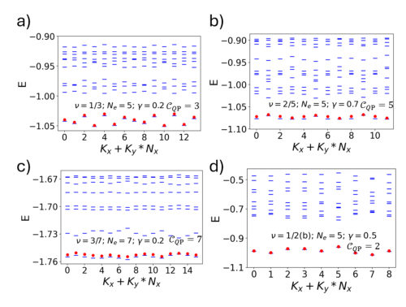
<figcaption class="paper-figure-caption"><b>Fig 3.</b> FIG. 3. (a-d) Quasiparticle energies for different fillings. The blue dashes are obtained from ED and red dots from CF. The filling factor, particle number, and values of γ are labeled on the plots. We choose the lattice (Nx, Ny) = (7, 2) (a), (4, 3) (b), (4, 4) (c) and (3, 3) (d). All energies are quoted in e2/ϵℓ0. We also label the QP band Chern number CQP in each panel, whose numerical results are shown in SM [32].</figcaption>
</figure>
</div>

<p><strong>Summary.</strong> This paper adapts the composite-fermion theory, used for fractional quantum Hall states, to model fractional Chern insulators in systems with spatially varying Berry curvature. By constructing specialized wave functions, the authors demonstrate that the resulting quasiparticle bands exhibit robust, dispersive behavior and possess a quantized Chern number distinct from simple Landau levels. This establishes a theoretical framework for understanding mobile anyons in these novel topological materials.</p>
<p><strong>Why it may be interesting.</strong> The work provides a powerful, generalized theoretical tool (CF theory) to analyze topological phases in engineered lattice systems (Chern bands) that mimic magnetic field effects, which is highly relevant for understanding emergent quantum phenomena in solid-state materials.</p>
<details>
<summary>Detailed structure</summary>
<p><strong>Main problem.</strong> The paper extends the composite-fermion framework, traditionally used for uniform magnetic fields, to fractional Chern insulators where the magnetic field is replaced by the nonuniform Berry curvature of a Chern band.</p>
<p><strong>Main result.</strong> The composite-fermion description successfully captures the quasiparticle dispersion, showing that the isolated quasiparticle band carries a total Berry flux different from that of a conventional Landau level.</p>
<p><strong>Method.</strong> The authors construct composite-fermion wave functions for Jain states and their excitations, employing a momentum projector to map these states onto the physical lattice structure.</p>
<p><strong>Model / system.</strong> The study focuses on Fractional Chern Insulators (FCIs) modeled using ideal Chern bands, specifically utilizing the Aharonov–Casher Hamiltonian, which incorporates spatially modulated Berry curvature.</p>
<p><strong>Key observables.</strong> Quasiparticle (QP) and quasihole (QH) band dispersion, total Berry flux ($\Omega_{QP}$), and the Chern number ($C_{QP}$) of the emergent bands.</p>
<p><strong>Important parameters / regimes.</strong> Filling fractions $
u = 1/3, 2/5, 3/7$, and the strength of the magnetic field modulation ($\gamma$).</p>
<p><strong>Assumptions / limitations.</strong> The analysis assumes the existence of an isolated quasiparticle band for the Chern number calculation and relies on the composite-fermion mapping being valid.</p>
<p><strong>Figures summary.</strong> Figures illustrate the flux distribution, the comparison between flat bands in uniform fields versus dispersing bands in a crystal, and the definition of the Chern quasiparticle flux.</p>
<p><strong>Paper structure.</strong> The paper systematically develops the CF construction for Jain states in AC bands, calculates the QP/QH wave functions, and then analyzes the resulting topological properties, such as the Berry flux and Chern number, comparing them to exact diagonalization results.</p>
</details>
<details>
<summary>Abstract</summary>
<p>The composite-fermion framework maps the strongly correlated fractional quantum Hall state onto a weakly interacting integer quantum Hall state in a reduced effective magnetic field. We ask how this framework is modified for fractional Chern insulators, where the role of a uniform magnetic field is replaced by the nonuniform Berry curvature of a Chern band. Specifically, we construct composite-fermion wave functions for Jain states and their quasiparticles and quasiholes in Aharonov-Casher bands, a widely used model for ideal Chern bands. We find that these states overlap closely with exact eigenstates over a broad range of field modulation. Using these wave functions, we demonstrate that the emergent composite-fermion band structure goes beyond the conventional picture of effective Landau levels, correctly capturing the quasiparticle dispersion. Remarkably, we find that an isolated quasiparticle band carries a total Berry flux that is different from a Landau level. These results establish a composite-fermion description for mobile fractional Chern insulator anyons and provide a framework to understand their stability.</p>
</details>
<p><sub><a href="#top">↑ back to top</a></sub></p>

<p><a id="paper-2610.01772"></a></p>
<h3 id="efficient-quantum-phase-estimation-with-adaptive-entanglement-assisted-hadamard-test"><a href="http://arxiv.org/abs/2610.01772v1">Efficient quantum phase estimation with adaptive entanglement-assisted Hadamard test</a></h3>
<p><strong>Authors:</strong> Hengzhun Chen, Benchi Zhao, Yingzhou Li<br>
<strong>Type:</strong> theory · <strong>Category:</strong> quantum information and computing · <strong>PDF:</strong> <a href="https://arxiv.org/pdf/2610.01772v1">https://arxiv.org/pdf/2610.01772v1</a><br>
<strong>Analysis basis:</strong> full PDF text, analyzed in chunks
<strong>Topic relevance:</strong> <code>quantum measurements</code> <strong>3/5</strong></p>
<div class="figure-strip-hint">↔ Scroll figures horizontally</div>
<div class="paper-figures-scroll">
<figure class="paper-figure-card">
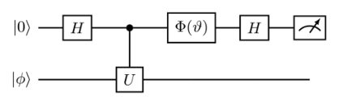
<figcaption class="paper-figure-caption"><b>Fig 1.</b> FIG. 1. Quantum circuit of standard Hadamard test with reference.</figcaption>
</figure>
<figure class="paper-figure-card">
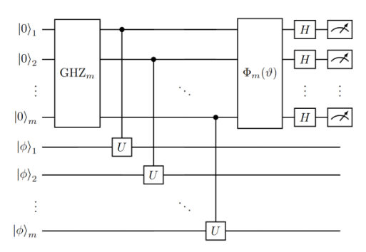
<figcaption class="paper-figure-caption"><b>Fig 2.</b> FIG. 2. Quantum circuit of entanglement-assisted Hadamard test with m-qubit GHZ state.</figcaption>
</figure>
<figure class="paper-figure-card">
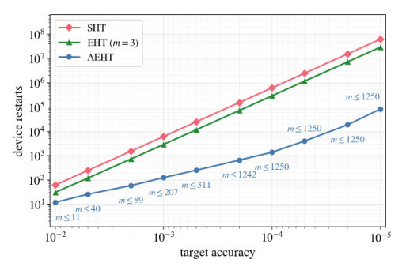
<figcaption class="paper-figure-caption"><b>Fig 3.</b> FIG. 3. Device-restart count for exact eigenstate preparation. The labels on the AEHT refer to the maximum amplification used.</figcaption>
</figure>
<figure class="paper-figure-card">
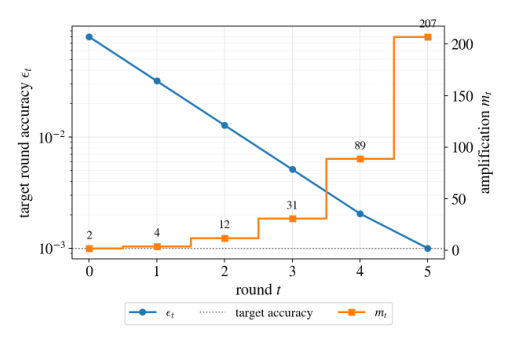
<figcaption class="paper-figure-caption"><b>Fig 4.</b> FIG. 4. The amplification mt and estimated phase error ϵt with re- spect to the increase of round t in the Algorithm 2. The dotted line refers to the target accuracy ϵ = 10−3.</figcaption>
</figure>
<figure class="paper-figure-card">
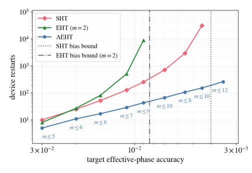
<figcaption class="paper-figure-caption"><b>Fig 5.</b> FIG. 5. Device-restart count for imperfect eigenstate preparation. The vertical dotted curve and dash-dot curve mark the bias bounds of SHT and Fixed-m EHT (m = 2), respectively.</figcaption>
</figure>
</div>

<p><strong>Summary.</strong> This paper introduces the Adaptive Entanglement-Assisted Hadamard Test (AEHT) to overcome the resource limitations of standard quantum phase estimation techniques. By iteratively refining the reference phase, AEHT achieves a superior scaling of $O(\log(1/\epsilon))$ in terms of device-restart count. This provides an efficient pathway for estimating high-precision quantum phases on current quantum processors.</p>
<p><strong>Why it may be interesting.</strong> The focus on resource scaling (device-restart count) and the development of an adaptive protocol directly addresses the practical limitations of implementing quantum algorithms on noisy, near-term quantum hardware, which is highly relevant to AMO and quantum optics research.</p>
<details>
<summary>Detailed structure</summary>
<p><strong>Main problem.</strong> The paper addresses the challenge of achieving high-precision quantum phase estimation (QPE) efficiently, especially in the high-precision regime where conventional methods fail or become resource-intensive.</p>
<p><strong>Main result.</strong> The proposed Adaptive Entanglement-Assisted Hadamard Test (AEHT) achieves a significantly better resource scaling, achieving a shot count complexity of $O(\log(1/\epsilon))$, compared to $O(1/\epsilon^2)$ for standard methods.</p>
<p><strong>Method.</strong> The method develops an iterative protocol (AEHT) that adaptively refines the reference phase used in the entanglement-assisted Hadamard test, allowing for progressive signal amplification while controlling resource costs.</p>
<p><strong>Model / system.</strong> The core model is the estimation of a quantum phase $   heta$ associated with an eigenstate $|\phi
angle$ of a unitary operator $U$. The analysis compares the Standard Hadamard Test (SHT) and the Entanglement-Assisted Hadamard Test (EHT) using GHZ states.</p>
<p><strong>Key observables.</strong> Phase estimate $\hat{	heta}$, measurement expectation value $\hat{S}$, and the resource cost metric, specifically the 'device-restart count' rather than shot count.</p>
<p><strong>Important parameters / regimes.</strong> Target phase accuracy $\epsilon$, amplification factor $m$, and the contraction factor $\gamma$ used in the adaptive steps.</p>
<p><strong>Assumptions / limitations.</strong> The analysis assumes that the cost metric should be the device-restart count to accurately reflect near-term hardware limitations, and it addresses the bias introduced by imperfect eigenstate preparation.</p>
<p><strong>Figures summary.</strong> Figures illustrate the quantum circuits for the standard and entanglement-assisted Hadamard tests, while the text references algorithms detailing the iterative steps of the AEHT.</p>
<p><strong>Paper structure.</strong> The paper first establishes the limitations of SHT and EHT, then introduces the AEHT protocol, derives the improved complexity bounds for both shot count and the more relevant device-restart count, and finally extends the analysis to handle systematic biases from imperfect state preparation.</p>
</details>
<details>
<summary>Abstract</summary>
<p>The entanglement-assisted Hadamard test (EHT) is a practical method for estimating a quantum phase by amplifying the phase signal. However, the feasible amplification is fundamentally limited by the accuracy of the reference phase, such that the method is inefficient in the high-precision regime. In this work, we propose an algorithm, called adaptive entanglement-assisted Hadamard test (AEHT), that iteratively refines the reference phase, enabling progressively stronger amplification as the iteration goes by. We further consider the imperfect eigenstate preparation scenario, where a systematic bias is unavoidable when estimating the quantum phase with the conventional EHT. Such a bias can be suppressed by the proposed AEHT. Moreover, taking physical implementation into consideration, we adopt device-restart count to measure the cost of quantum phase estimation, rather than shot count. The numerical experiments confirm the effectiveness of the proposed AEHT compared with conventional methods under this measure. By unlocking the full amplification power of large entangled states, this work offers an efficient method to estimate high-precision quantum phase on near-term quantum processors.</p>
</details>
<p><sub><a href="#top">↑ back to top</a></sub></p>

<p><a id="paper-2610.00521"></a></p>
<h3 id="first-quantized-quantum-simulation-with-non-local-potentials-by-matrix-product-state-encoding"><a href="http://arxiv.org/abs/2610.00521v1">First-quantized quantum simulation with non-local potentials by matrix-product-state encoding</a></h3>
<p><strong>Authors:</strong> Kazuki Tsuoka, Taichi Kosugi, Masari Watanabe, Hirofumi Nishi, Yu-ichiro Matsushita<br>
<strong>Type:</strong> theory · <strong>Category:</strong> quantum information and computing · <strong>PDF:</strong> <a href="https://arxiv.org/pdf/2610.00521v1">https://arxiv.org/pdf/2610.00521v1</a><br>
<strong>Analysis basis:</strong> full PDF text, analyzed in chunks
<strong>Topic relevance:</strong> <code>methods for driven-dissipative</code> <strong>3/5</strong></p>
<div class="figure-strip-hint">↔ Scroll figures horizontally</div>
<div class="paper-figures-scroll">
<figure class="paper-figure-card">
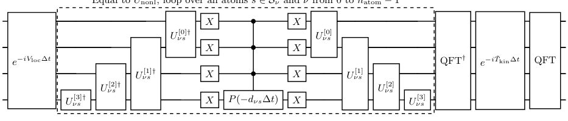
<figcaption class="paper-figure-caption"><b>Fig 1.</b> FIG. 1. An example 4-qubit quantum circuit diagram implementing a single Trotter step operator using a full-rank MPS representation of the non-local potential. We omit the translation operator T(Rν). P(ϕ) = |0⟩⟨0| + eiϕ |1⟩⟨1| is a phase gate, and “QFT” represents the quantum Fourier transform circuit, which implements the discrete Fourier transform F.</figcaption>
</figure>
<figure class="paper-figure-card">
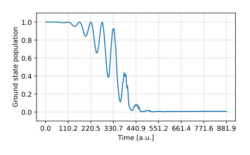
<figcaption class="paper-figure-caption"><b>Fig 2.</b> FIG. 2. The temporal evolution of the ground-state popula- tion |⟨ϕ0|ψ(t)⟩|2 of a one-dimensional hydrogen atom inter- acting with an 8-cycle ultrashort laser pulse with peak inten- sity of Ipeak = 4.0 × 1014 W/cm2 and angular frequency of ω = 0.057 a.u., simulated by the split-operator method with the single-separable potential given in Eq. (38).</figcaption>
</figure>
<figure class="paper-figure-card">
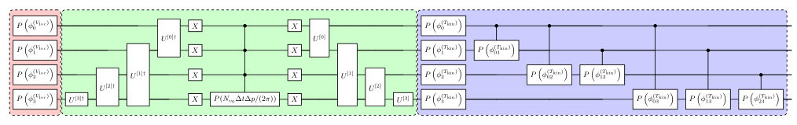
<figcaption class="paper-figure-caption"><b>Fig 3.</b> FIG. 3. An example 4-qubit quantum circuit diagram implementing a single Trotter step operator for a one-dimensional hydrogen atom interacting with an ultrashort laser pulse using a full-rank MPS representation of the single non-local separable potential. The first segment (filled with red) of the circuit implements e−iVloc(t)∆t as a tensor product of single-qubit phase gates, the second segment (filled with green) implements e−iVnonl∆t using a state-preparation unitary Uv0 and an (n −1)- controlled phase gate, and the third segment (filled with blue) implements e−i ˜ Tkin∆t as a tensor product of single-qubit phase gates followed by a series of controlled-phase gates. ϕ(Vloc) k = −2kτ1∆p...</figcaption>
</figure>
<figure class="paper-figure-card">
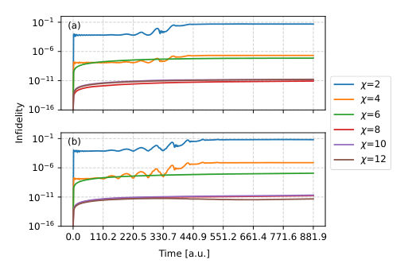
<figcaption class="paper-figure-caption"><b>Fig 4.</b> FIG. 6. The temporal evolution of infidelity when us- ing the MPS-encoded non-local potentials (a) V (p, p′) = −v0(p)v∗ 0(p′) and (b) V (p, p′) = −v1(p)v∗ 1(p′) −v2(p)v∗ 2(p′), compared with the split-operator method over the same 10,000 time steps for each bond dimension.</figcaption>
</figure>
<figure class="paper-figure-card">
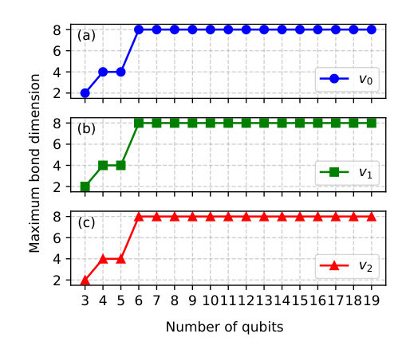
<figcaption class="paper-figure-caption"><b>Fig 5.</b> FIG. 4. Maximum bond dimension of the MPS representa- tions of (a) |v0⟩, (b) |v1⟩, and (c) |v2⟩for each number of qubits.</figcaption>
</figure>
</div>

<p><strong>Summary.</strong> This paper presents a novel method to efficiently encode and simulate non-local potentials within quantum circuits using Matrix Product State (MPS) encoding. By applying this to the ionization of a 1D hydrogen atom, the authors show that their approach drastically reduces the required circuit depth compared to standard unitary decompositions. This provides a practical pathway for performing complex first-quantized quantum simulations.</p>
<p><strong>Why it may be interesting.</strong> This work directly addresses the computational bottleneck of simulating complex quantum dynamics (like those involving pseudopotentials) by mapping the physics onto an efficient quantum information structure (MPS), which is crucial for fault-tolerant quantum simulation.</p>
<details>
<summary>Detailed structure</summary>
<p><strong>Main problem.</strong> The core challenge is developing an efficient quantum circuit implementation for simulating systems governed by non-local potentials, which are difficult to encode directly into quantum circuits.</p>
<p><strong>Main result.</strong> The authors propose and demonstrate a method using Matrix Product State (MPS) encoding that significantly reduces the required circuit depth for implementing the non-local potential propagator during a Trotter step.</p>
<p><strong>Method.</strong> The simulation uses first-quantized approaches, representing the state via MPS encoding to efficiently implement the time evolution operator, particularly the non-local potential term, $e^{-iV_{	ext{nonl}}\Delta t}$.</p>
<p><strong>Model / system.</strong> The study models the ionization of a one-dimensional hydrogen atom driven by an ultrashort laser pulse. The Hamiltonian includes kinetic energy ($T_{kin}$) and potentials ($V$), where the non-local potential ($V_{	ext{nonl}}$) is decomposed into a sum of separable projectors.</p>
<p><strong>Key observables.</strong> Circuit depth (a measure of computational resource cost) and the accuracy of the simulation relative to direct unitary decomposition.</p>
<p><strong>Important parameters / regimes.</strong> The circuit depth scales with $ ext{deg}(V_{    ext{loc}})$, $L$ (max projector functions), $n_{	ext{atom}}$, and the MPS bond dimension $\chi$.</p>
<p><strong>Assumptions / limitations.</strong> The time evolution is approximated using first-order Trotterization, and the state is efficiently represented by an MPS.</p>
<p><strong>Figures summary.</strong> Figure 8 analyzes the Schmidt decomposition of state vectors, showing that the required bond dimension for MPS representation is governed by the Gaussian component of the state.</p>
<p><strong>Paper structure.</strong> The paper details the necessity of simulating non-local potentials, derives the structure of the non-local propagator using separable projectors, and then introduces the MPS encoding technique to achieve an efficient circuit depth for the full Trotter step operator.</p>
</details>
<details>
<summary>Abstract</summary>
<p>Quantum simulations based on first-quantized approaches can offer lower space and gate complexities than second-quantized approaches. The gate requirements for these simulations can be further reduced by employing pseudopotentials, a technique widely used in classical quantum chemistry calculations to decrease the number of simulated electrons. However, implementing pseudopotentials in quantum circuits remains challenging due to their non-local nature. In this study, we proposed a method to efficiently implement non-local potentials using matrix product state (MPS) encoding. MPS encoding allows us to efficiently implement a Trotter step operator with a circuit depth of $O(\mathrm{deg}(V_{\mathrm{loc}}) n^{\mathrm{deg}(V_{\mathrm{loc}})} + 8Lnn_{\mathrm{atom}}χ^2 + 2n^2)$, where $\mathrm{deg}(V_{\mathrm{loc}})$ is the degree of the polynomial local potential, $n_{\mathrm{atom}}$ is the number of atoms in the system, $L$ is the maximum number of projector functions across all atoms, and $n$ is the number of qubits used to represent the binary-encoded wave function in one-dimensional space. We demonstrated the effectiveness of this approach by applying it to a model of the ionization of a one-dimensional hydrogen atom driven by an ultrashort laser pulse. Our results showed that MPS encoding significantly reduces the required circuit depth compared to a direct unitary decomposition, providing a pathway for practical first-quantized simulations.</p>
</details>
<p><sub><a href="#top">↑ back to top</a></sub></p>

<p><a id="paper-2610.01011"></a></p>
<h3 id="highly-anisotropic-collective-modes-of-altermagnetic-superconductors-with-bogoliubov-fermi-surfaces"><a href="http://arxiv.org/abs/2610.01011v1">Highly anisotropic collective modes of altermagnetic superconductors with Bogoliubov Fermi surfaces</a></h3>
<p><strong>Authors:</strong> Huaisong Zhao, Peng Zou, Xia-Ji Liu, Hui Hu<br>
<strong>Type:</strong> theory · <strong>Category:</strong> quantum gases · <strong>PDF:</strong> <a href="https://arxiv.org/pdf/2610.01011v1">https://arxiv.org/pdf/2610.01011v1</a><br>
<strong>Analysis basis:</strong> full PDF text, analyzed in chunks
<strong>Topic relevance:</strong> <code>Keldysh / 2PI / non-Gaussian methods</code> <strong>3/5</strong></p>
<div class="figure-strip-hint">↔ Scroll figures horizontally</div>
<div class="paper-figures-scroll">
<figure class="paper-figure-card">

<figcaption class="paper-figure-caption"><b>Fig 1.</b> FIG. 1. (a) Pairing gap ∆, energy gap Eg, spin polarization δn/n, and (b) superfluid fraction ns/n and sound velocity cs, as functions of the external magnetic field h for an al- termagnetic coupling λ = 0.7. In each subplot, the yellow shaded region denotes the balanced BCS state. The subplots (c) and (d) show the spectral function A(k, ω = 0) in the BCS state (h = 0) and polarized BCS state (h = 0.15εF ), respec- tively. In the polarized BCS state, the two BFSs are clearly visible. Throughout the work, we take the binding energy εB = 0.08εF and a negligible temperature T = 0.01TF .</figcaption>
</figure>
<figure class="paper-figure-card">

<figcaption class="paper-figure-caption"><b>Fig 2.</b> FIG. 3. Phonon dispersion relations in the fully gapped BCS phase with λ = 0.7 and h = 0 for two momentum directions, ϕq = −45◦(black solid line) and ϕq = 0 (red dashed line), compared with the low-momentum linear dispersion csq (blue dot-dashed line). The inset shows the contour plot of the charge DSF, Sc(q, ω), at ϕq = −45◦. Despite the anisotropy of the dispersion, the microscopic sound velocity, defined by limq→0[ωph(q)/q], is independent of the propagation direction ϕq and coincides with the thermodynamic sound velocity cs.</figcaption>
</figure>
<figure class="paper-figure-card">

<figcaption class="paper-figure-caption"><b>Fig 3.</b> FIG. 2. Polar contour plots of the Cooper pair spectral functions Aθθ(q, ω) (a) and Aλλ(q, ω) (b), together with the charge DSF Sc(q, ω) (c) and the spin DSF Ss(q, ω) (d), for the fully gapped BCS phase with λ = 0.7 and h = 0. In each panel, the radial coordinate represents ω/εF , as indicated on the left, while the angular coordinate gives the direction of the momentum q, ϕq, in radians. The spectral-function col- ormaps are shown in arbitrary units, whereas the DSF col- ormaps are expressed in units of εF /n. The momentum mag- nitude is fixed at q = |q| = 0.5kF . Throughout the work, a small spectral broadening of 0.01εF is introduced to render the δ-function peaks visible in the plots.</figcaption>
</figure>
<figure class="paper-figure-card">

<figcaption class="paper-figure-caption"><b>Fig 4.</b> FIG. 5. (a) Phonon dispersion relations in the polarized BCS state with λ = 0.7 and h = 0.15εF for three momentum direc- tions: ϕq = −45◦(black dot-dashed line), ϕq = 0 (red dashed line) and ϕq = +45◦(green dashed line). The shaded bands denote the peak widths for each momentum direction, ex- tracted by fitting the phonon spectral function to a Lorentzian lineshape. (b), (c) Contour plots of the pair spectral function Aλλ(q, ω) and the spin DSF Ss(q, ω), respectively, along the diagonal momentum direction, ϕq = +45◦.</figcaption>
</figure>
<figure class="paper-figure-card">

<figcaption class="paper-figure-caption"><b>Fig 5.</b> FIG. 4. Left column: Polar contour plots of Aθθ(q, ω) (a), Aλλ(q, ω) (b), Sc(q, ω) (c) and Ss(q, ω) (d) for a polarized BCS state with λ = 0.7 and h = 0.15εF . Right column: Cor- responding plots for three distinct angular directions of the momentum q, as indicated in panels (e)-(g). The momentum magnitude is fixed at q = |q| = 0.3kF .</figcaption>
</figure>
</div>

<p><strong>Summary.</strong> This theoretical work analyzes collective modes in altermagnetic superconductors, showing that the emergence of Bogoliubov Fermi surfaces drastically alters the dynamics. The key finding is that BFSs induce strong momentum-dependent damping on the phonon mode, which is accompanied by a measurable in-gap structure in the Higgs mode, detectable through the spin response.</p>
<p><strong>Why it may be interesting.</strong> The explicit connection drawn between the geometry of the Fermi surface (BFSs) and the resulting anisotropic dynamics of collective excitations (phonon/Higgs) provides a powerful theoretical tool for interpreting spectroscopic measurements in unconventional superconductors.</p>
<details>
<summary>Detailed structure</summary>
<p><strong>Main problem.</strong> The study investigates the collective excitation modes (phonon and Higgs) in altermagnetic superconductors, specifically focusing on how emergent Bogoliubov Fermi surfaces (BFSs) modify these dynamics.</p>
<p><strong>Main result.</strong> BFSs generate highly anisotropic collective-mode dynamics, causing the phonon mode to be strongly damped or suppressed at small momenta, while simultaneously revealing an in-gap structure in the Higgs mode detectable via the spin response.</p>
<p><strong>Method.</strong> The analysis employs a functional path-integral formalism within the Random Phase Approximation (RPA) to calculate charge and spin density response functions and diagonalize the pairing vertex function.</p>
<p><strong>Model / system.</strong> The system is a charge-neutral altermagnetic superconductor with d-wave spin-split bands, modeled using BCS theory. The investigation compares the fully gapped BCS state to a gapless polarized BCS regime induced by an external magnetic field.</p>
<p><strong>Key observables.</strong> Collective modes (Higgs and phonon), Charge and Spin Dynamical Structure Factors (DSFs), and the spectral function $A(\mathbf{k}, \omega=0)$.</p>
<p><strong>Important parameters / regimes.</strong> Magnetic field strength ($h$), superconducting gap ($\Delta$), and momentum direction ($\phi_q$).</p>
<p><strong>Assumptions / limitations.</strong> The analysis assumes a charge-neutral Fermi system and utilizes approximations like the Random Phase Approximation (RPA) and Gaussian-level expansions for the effective action.</p>
<p><strong>Figures summary.</strong> Figures illustrate the evolution of superconducting parameters with $h$, show the emergence of BFSs in the spectral function, and present polar contour plots comparing the spectral weight of the phonon, Higgs, and spin responses across different momentum directions.</p>
<p><strong>Paper structure.</strong> The paper progresses by first establishing the basic BCS state dynamics, then introducing the magnetic field to generate BFSs, and finally analyzing the resulting anisotropic damping and the coupling between the Higgs and spin response in the gapless regime.</p>
</details>
<details>
<summary>Abstract</summary>
<p>We investigate collective modes in charge-neutral altermagnetic superconductors with $d$-wave spin-split bands, focusing on the impact of emergent Bogoliubov Fermi surfaces. In the absence of a magnetic field, the BCS state supports collective modes that inherit the underlying $d$-wave symmetry, resulting in pronounced momentum-space anisotropy. The broken time-reversal symmetry further couples these modes to spin-density fluctuations, allowing their signatures to emerge in the spin dynamical structure factor. Upon applying a magnetic field, Bogoliubov Fermi surfaces emerge and qualitatively reshape the collective-mode dynamics through gapless particle-hole excitations and strongly anisotropic Landau damping. The damping is strongest along the momentum-space diagonal, where it can suppress the low-energy phonon mode at small momenta. Remarkably, the suppressed phonon is accompanied by the emergence of an in-gap structure in the Higgs mode and an associated pronounced enhancement of the spin response. These results establish Bogoliubov Fermi surfaces as a mechanism for generating highly anisotropic collective-mode dynamics and identify spin response as a sensitive probe of in-gap Higgs excitations in altermagnetic superconductors.</p>
</details>
<p><sub><a href="#top">↑ back to top</a></sub></p>

<p><a id="paper-2610.01523"></a></p>
<h3 id="inherent-turbulence-immunity-of-vector-vortex-beams-in-free-space-quantum-key-distribution"><a href="http://arxiv.org/abs/2610.01523v1">Inherent Turbulence Immunity of Vector Vortex Beams in Free Space Quantum Key Distribution</a></h3>
<p><strong>Authors:</strong> Behnam Talari, Rouhollah Karimzadeh<br>
<strong>Type:</strong> theory · <strong>Category:</strong> quantum information and computing · <strong>PDF:</strong> <a href="https://arxiv.org/pdf/2610.01523v1">https://arxiv.org/pdf/2610.01523v1</a><br>
<strong>Analysis basis:</strong> full PDF text, analyzed in chunks
<strong>Topic relevance:</strong> <code>interference shaping light</code> <strong>3/5</strong></p>
<div class="figure-strip-hint">↔ Scroll figures horizontally</div>
<div class="paper-figures-scroll">
<figure class="paper-figure-card">

<figcaption class="paper-figure-caption"><b>Fig 1.</b> Figure 1: Schematic of the free-space quantum key distribution experimental transceiver architecture. The setup comprises three interconnected stages: (i) Alice (Transmitter): A continuous-wave pump laser operating at λp = 405 nm pumps a non-linear Type-I beta-barium borate (BBO) crystal to generate collinear, polarization-entangled degenerate photon pairs at λs = λi = 810 nm. The beam is directed onto a reflective spatial light modulator (SLM) programmed with computer-generated holograms (CGHs) for complex spatial mode synthesis, followed by polarization controllers to prepare the non-separable vector vortex Bell state |ΨVVB⟩. (ii) Atmospheric Turbulence Channel: The generated quantum...</figcaption>
</figure>
<figure class="paper-figure-card">

<figcaption class="paper-figure-caption"><b>Fig 2.</b> Figure 2: Transverse phase distribution Φscalar(x,y) of a pure scalar OAM state (ℓ= 2) after propagation through atmospheric turbulence (D/r0 = 1.2) across the 6 mm aperture. The continuous 4π azimuthal phase progression is scrambled, exhibiting branch-cut dislocations and multi-core splitting.</figcaption>
</figure>
<figure class="paper-figure-card">

<figcaption class="paper-figure-caption"><b>Fig 3.</b> Figure 3: Synthesized optical turbulence phase screen Φturb(x,y) at mod- erate turbulence strength (D/r0 = 1.2) across the 6 mm receiver aperture, displaying continuous stochastic optical path variations spanning −0.5 to +0.5 rad.</figcaption>
</figure>
<figure class="paper-figure-card">

<figcaption class="paper-figure-caption"><b>Fig 4.</b> Figure 5: Hybrid vector vortex beam (VVB) after propagation through identical turbulence (D/r0 = 1.2). While the background scalar intensity exhibits mild scintillation, overlaid cyan polarization vectors remain az- imuthally ordered, demonstrating intrinsic common-mode protection.</figcaption>
</figure>
<figure class="paper-figure-card">

<figcaption class="paper-figure-caption"><b>Fig 5.</b> Figure 4: Unperturbed doughnut intensity profile S0(x,y) of the hybrid polarization–OAM Bell state |ΨVVB⟩prior to entering the turbulent atmo- spheric medium, exhibiting a well-defined dark central vortex singularity.</figcaption>
</figure>
</div>

<p><strong>Summary.</strong> This paper demonstrates that using Vector Vortex Beams (VVBs) for quantum key distribution provides inherent immunity to atmospheric turbulence, a major hurdle for free-space quantum links. By exploiting the symmetry of terrestrial air's refractive index fluctuations, the VVB encoding suppresses the error rate significantly without needing complex, active adaptive optics. This breakthrough suggests a pathway for robust, practical quantum communication over atmospheric channels.</p>
<p><strong>Why it may be interesting.</strong> This work directly addresses the practical limitations of quantum communication in real-world environments by proposing a structural encoding (VVB) that leverages fundamental symmetries to achieve passive robustness against environmental noise, which is highly relevant to quantum networking.</p>
<details>
<summary>Detailed structure</summary>
<p><strong>Main problem.</strong> High-capacity free-space Quantum Key Distribution (QKD) using Orbital Angular Momentum (OAM) multiplexing is severely degraded by atmospheric turbulence, causing decoherence and exceeding security thresholds.</p>
<p><strong>Main result.</strong> Vector Vortex Beams (VVBs) provide intrinsic, hardware-free immunity against turbulent perturbations, suppressing the Quantum Bit Error Rate (QBER) from 42.0% down to 4.8%.</p>
<p><strong>Method.</strong> The authors used numerical propagation simulations to model the evolution of VVB states through phase screens representing atmospheric turbulence.</p>
<p><strong>Model / system.</strong> The system involves quantum optical links transmitting structured light (VVBs) through a turbulent atmosphere. The VVB state is a hybrid polarization-OAM entangled state, and the turbulence is modeled by refractive-index fluctuations.</p>
<p><strong>Key observables.</strong> Quantum Bit Error Rate (QBER), VVB state survival probability, and Quantum State Fidelity (F).</p>
<p><strong>Important parameters / regimes.</strong> Turbulence strength parameter $D/r_0$ (ranging from 0 to 3.0); the security threshold of 11% for QBER.</p>
<p><strong>Assumptions / limitations.</strong> The analysis assumes the optical anisotropy of terrestrial air is very small ($\Delta n < 10^{-9}$), which allows the turbulent phase screen to act as an identical common-mode scalar phase screen that cancels in the relative polarization-phase degree of freedom.</p>
<p><strong>Figures summary.</strong> Figures illustrate the spatial scrambling of pure scalar OAM beams versus the preserved polarization structure of VVBs after turbulence, and plot the QBER and Fidelity decay as a function of turbulence strength.</p>
<p><strong>Paper structure.</strong> The paper first establishes the problem of turbulence degrading OAM-based QKD. It then introduces VVBs as a solution, detailing the physical mechanism (common-mode phase cancellation) and presenting numerical simulations comparing the performance of scalar beams versus VVBs across varying turbulence strengths.</p>
</details>
<details>
<summary>Abstract</summary>
<p>Orbital angular momentum (OAM) multiplexing provides an infinite-dimensional discrete Hilbert space ideally suited for high-capacity free-space quantum key distribution (QKD). Nevertheless, pure scalar spatial modes carrying topological charge ($|\ell| \ge 1$) undergo severe decoherence when transmitted through terrestrial atmospheric turbulence. Turbulent refractive-index eddies split high-order vortex singularities, induce catastrophic intermodal crosstalk across adjacent topological channels, and rapidly drive the quantum bit error rate (QBER) well above the unconditional 11% security threshold associated with individual cloning attacks. Here, we demonstrate that hybrid polarization-OAM entangled states, known as vector vortex beams (VVBs), provide intrinsic, hardware-free immunity against turbulent perturbations. Because the optical anisotropy of terrestrial air is exceedingly small ($Δn < 10^{-9}$), refractive-index fluctuations couple symmetrically to orthogonal circular polarization modes as an identical common-mode scalar phase screen that cancels in the relative polarization-phase degree of freedom. By numerically propagating modal fields through modified power-spectral phase screens over turbulence strengths ranging from $D/r_0 = 0$ to $3.0$, we show that the VVB encoding protocol suppresses the asymptotic QBER from 42.0% to 4.8%, yielding an error-suppression factor of approximately 11.6 without requiring active adaptive optics or deformable mirrors.</p>
</details>
<p><sub><a href="#top">↑ back to top</a></sub></p>

<p><a id="paper-2610.01684"></a></p>
<h3 id="mentor-initiated-asymmetric-bidirectional-quantum-teleportation-protocol-for-arbitrary-qubit-states"><a href="http://arxiv.org/abs/2610.01684v1">Mentor-Initiated Asymmetric Bidirectional Quantum Teleportation Protocol for Arbitrary Qubit States</a></h3>
<p><strong>Authors:</strong> Sugata Adhya, Benchao Yang<br>
<strong>Type:</strong> theory · <strong>Category:</strong> quantum information and computing · <strong>PDF:</strong> <a href="https://arxiv.org/pdf/2610.01684v1">https://arxiv.org/pdf/2610.01684v1</a><br>
<strong>Analysis basis:</strong> full PDF text, analyzed in chunks
<strong>Topic relevance:</strong> <code>quantum measurements</code> <strong>3/5</strong></p>
<div class="figure-strip-hint">↔ Scroll figures horizontally</div>
<div class="paper-figures-scroll">
<figure class="paper-figure-card">

<figcaption class="paper-figure-caption"><b>Fig 1.</b> Figure 1: Quantum circuit for the preparation of entangled channels.</figcaption>
</figure>
<figure class="paper-figure-card">

<figcaption class="paper-figure-caption"><b>Fig 2.</b> Figure 2: Circuit diagram for the proposed protocol</figcaption>
</figure>
</div>

<p><strong>Summary.</strong> This paper introduces a novel, mentor-initiated quantum teleportation protocol designed for bidirectional, asymmetric state transfer. Its key advancement is the ability to teleport an arbitrary two-qubit state, unlike previous restricted methods. The protocol is demonstrated using quantum circuits and analyzes its operational efficiency.</p>
<p><strong>Why it may be interesting.</strong> This work directly addresses quantum communication protocols, which are foundational to quantum networking and quantum computation theory.</p>
<details>
<summary>Detailed structure</summary>
<p><strong>Main problem.</strong> The paper proposes a mentor-initiated bidirectional asymmetric quantum teleportation protocol.</p>
<p><strong>Main result.</strong> The protocol successfully allows the teleportation of an arbitrary two-qubit state from Bob to Alice, overcoming limitations of existing schemes.</p>
<p><strong>Method.</strong> The protocol involves sequential measurements by a mentor, Alice, and Bob, utilizing pre-shared entangled resources and subsequent unitary recovery operations.</p>
<p><strong>Model / system.</strong> The model is a quantum information protocol involving multiple qubits (up to 15) and relies on shared entangled states ($\vert\Omega_1
angle_{M-A}$ and $\vert\Omega_2
angle_{M-B}$) and classical communication.</p>
<p><strong>Key observables.</strong> Efficiency ($\eta = q_t/q_c + b_t$), which was calculated to be 12.5%.</p>
<p><strong>Important parameters / regimes.</strong> The protocol handles arbitrary single-qubit and two-qubit states, contrasting with restricted prior work.</p>
<p><strong>Assumptions / limitations.</strong> The protocol assumes the existence of a mentor capable of establishing the necessary entangled resources.</p>
<p><strong>Figures summary.</strong> Figure 1 illustrates the quantum circuits for preparing the two required entangled channels. Figure 2 shows the overall circuit diagram detailing the protocol's construction.</p>
<p><strong>Paper structure.</strong> The paper establishes the general framework, details the specific protocol steps, constructs the necessary entangled resources, and concludes with a quantum-circuit implementation using Qiskit.</p>
</details>
<details>
<summary>Abstract</summary>
<p>In this paper, a mentor-initiated bidirectional asymmetric quantum teleportation protocol is proposed. Unlike existing schemes that restrict the two-qubit state transmitted from Bob to Alice to a Bell-like form $α|00\rangle+β|11\rangle$, our protocol allows an arbitrary two-qubit state to be teleported from Bob to Alice within the mentor-initiated framework. The required entangled resources are constructed using standard quantum gates, and the protocol is illustrated through its quantum-circuit implementation in Qiskit.</p>
</details>
<p><sub><a href="#top">↑ back to top</a></sub></p>

<p><a id="paper-2610.01371"></a></p>
<h3 id="namath626mathirmath627mathclmath628math-the-missing-member-of-the-perfectly-cubic-vacancy-ordered-math629mathirclmath630math-family-another-potential-math631math-math632math-ground-state-candidate"><a href="http://arxiv.org/abs/2610.01371v1">Na$_2$Ir$^\text{IV}$Cl$_6$: The Missing Member of the Perfectly Cubic Vacancy Ordered $A_2$IrCl$_6$ Family, Another Potential $J_{eff}$ = $\frac{1}{2}$ Ground State Candidate</a></h3>
<p><strong>Authors:</strong> Siddhartha Sankar Soren, Aditya Patra, Rounak Das, Ritwik Das, Tanmay Chanda, Jens Buck, Indra Dasgupta, Sugata Ray<br>
<strong>Type:</strong> both · <strong>Category:</strong> strongly correlated electrons · <strong>PDF:</strong> <a href="https://arxiv.org/pdf/2610.01371v1">https://arxiv.org/pdf/2610.01371v1</a><br>
<strong>Analysis basis:</strong> full PDF text, analyzed in chunks
<strong>Topic relevance:</strong> <code>analog quantum simulation</code> <strong>3/5</strong></p>
<div class="figure-strip-hint">↔ Scroll figures horizontally</div>
<div class="paper-figures-scroll">
<figure class="paper-figure-card">

<figcaption class="paper-figure-caption"><b>Fig 1.</b> Figure 1: Schematic of Na2IrCl6 cubic crystal structure and super exchange pathway between nearest neighbour magnetic Ir4+ ions.</figcaption>
</figure>
<figure class="paper-figure-card">

<figcaption class="paper-figure-caption"><b>Fig 2.</b> Figure 2: Experimental and refined Xray powder diffraction patterns with Bragg reflections. Inset: Thermogravimetric analysis of Na2IrCl6 heating from 30°-180°C at a rate of 10°C/min in dry nitrogen environment.</figcaption>
</figure>
<figure class="paper-figure-card">

<figcaption class="paper-figure-caption"><b>Fig 3.</b> Figure 3: a) Ir 4f core level XPS spectrum (shaded black open circle) along with the fitting (red solid line). b) XPS valence band spectra of the Na2IrCl6 system</figcaption>
</figure>
<figure class="paper-figure-card">

<figcaption class="paper-figure-caption"><b>Fig 4.</b> Figure 4: Magnetic properties of Na2IrCl6. a) χ vs T and (χ-χ0)−1 vs T plots from 1.8 K to 300 K. b) χ vs T and dχ(T)</figcaption>
</figure>
<figure class="paper-figure-card">

<figcaption class="paper-figure-caption"><b>Fig 5.</b> Figure 5: Transition temperatures of alkali iridium hexachlorides as function of nearest neigh- bour Cl-Cl distance</figcaption>
</figure>
</div>

<p><strong>Summary.</strong> This paper reports the synthesis and characterization of anhydrous $   ext{Na}_2   ext{IrCl}_6$, a material that realizes the perfectly cubic structure predicted for the $    ext{A}_2    ext{IrCl}_6$ family. By confirming its structure and observing antiferromagnetism, the authors provide a crucial platform to experimentally investigate the theoretical physics of $J_{eff} = rac{1}{2}$ ground states and Kitaev interactions in strongly correlated iridates.</p>
<p><strong>Why it may be interesting.</strong> The strong correlation, spin-orbit coupling, and the explicit connection to the Kitaev model make this highly relevant for understanding exotic quantum magnetic states in solid-state materials.</p>
<details>
<summary>Detailed structure</summary>
<p><strong>Main problem.</strong> The study investigates the structural and magnetic properties of vacancy ordered double perovskites (VODPs), specifically aiming to realize and characterize the potential $J_{eff} = rac{1}{2}$ ground state associated with Kitaev interactions.</p>
<p><strong>Main result.</strong> The authors report the first synthesis and characterization of anhydrous $ ext{Na}_2   ext{IrCl}_6$ single crystals exhibiting a cubic structure and long-range antiferromagnetic order at $1.91 	ext{ K}$. This material serves as a key candidate for exploring the ideal $J_{eff} = rac{1}{2}$ physics.</p>
<p><strong>Method.</strong> The work combines experimental techniques (synthesis, TGA, XRD, XPS, DC magnetization) with theoretical modeling (DFT calculations of exchange interactions).</p>
<p><strong>Model / system.</strong> The system is the $ ext{A}_2    ext{IrCl}_6$ family of VODPs, where $   ext{Ir}^{4+}$ ions in an octahedral environment are modeled to exhibit strong spin-orbit coupling, leading to low-energy magnetic degrees of freedom described by $S=1/2$ pseudospins and the Kitaev-Heisenberg Hamiltonian.</p>
<p><strong>Key observables.</strong> Antiferromagnetic transition temperature ($T_N = 1.91 	ext{ K}$), effective magnetic moment ($\mu_{	ext{eff}} = 1.71 \mu_{	ext{B}}$), and the confirmation of the cubic $Fmar{3}m$ structure.</p>
<p><strong>Important parameters / regimes.</strong> The system is characterized by the competition between Heisenberg, Kitaev, and symmetric exchange interactions ($J, K, \Gamma$).</p>
<p><strong>Assumptions / limitations.</strong> The primary assumption is that the ideal cubic structure allows for the realization of the perfect $J_{eff} = rac{1}{2}$ ground state, contrasting with previously observed monoclinic phases.</p>
<p><strong>Figures summary.</strong> Figures illustrate the cubic crystal structure, the nearest-neighbor superexchange pathway, and the experimental X-ray powder diffraction patterns confirming the crystal structure.</p>
<p><strong>Paper structure.</strong> The paper establishes the context of VODPs and the $J_{eff}$ physics, details the synthesis and structural characterization of the new cubic $   ext{Na}_2   ext{IrCl}_6$ phase, presents magnetic measurements confirming antiferromagnetism, and theoretically models the resulting magnetic interactions.</p>
</details>
<details>
<summary>Abstract</summary>
<p>Vacancy ordered double perovskites (VODPs) have been known for more than 100 years, but their exact crystal structures and magnetic ground state remained controversial till date. Anhydrous VODP iridates ($A_2$Ir$X_6$; $A$ = K$^+$, (NH$_4$)$^+$, Cs$^+$, Rb$^+$, and $X$ = F$^-$, Cl$^-$, Br$^-$), having $face-centered~cubic$ (fcc) antiferromagnetic ground state, offer a chemically well-defined platform to investigate the influence of on-site Coulomb repulsion, crystal field, spin-orbit coupling, and competing Heisenberg and Kitaev interactions. Interestingly, among these, the Na-based VODP iridates seem to possess an unusual hydration dependent structural and magnetic uncertainty. As a result, a cubic Na$_2$IrCl$_6$ system having fcc antiferromagnetism could not be stabilized ever. Here, for the first time, we report the synthesis and comprehensive characterization of anhydrous Na$_2$IrCl$_6$ single crystals having fcc structure with antiferromagnetic transition temperature of 1.91 K. Thermogravimetric analysis establishes the absence of lattice water and also demonstrates thermal stability of the crystals up to 453 K. The cubic phase reported here contrasts with previously described 'anhydrous' monoclinic Na$_2$IrCl$_6$ and highlights the strong structural and physical property relationship in Na-based VODP iridates. This new material offers an exciting playing ground for exploring another potential perfect $J_{eff}$ = $\frac{1}{2}$ octahedra and the consequent strong Kitaev interaction within the nearest-neighbor (nn) pairs of Ir ions.</p>
</details>
<p><sub><a href="#top">↑ back to top</a></sub></p>

<p><a id="paper-2610.00534"></a></p>
<h3 id="near-infrared-magnetic-linear-and-non-reciprocal-directional-dichroism-in-the-chiral-antiferromagnet-smfe3bo34"><a href="http://arxiv.org/abs/2610.00534v1">Near-infrared magnetic linear and non-reciprocal directional dichroism in the chiral antiferromagnet SmFe3(BO3)4</a></h3>
<p><strong>Authors:</strong> B. Beke, B. Szász, I. A. Gudim, D. Szaller, S. Bordács<br>
<strong>Type:</strong> experiment · <strong>Category:</strong> strongly correlated electrons · <strong>PDF:</strong> <a href="https://arxiv.org/pdf/2610.00534v1">https://arxiv.org/pdf/2610.00534v1</a><br>
<strong>Analysis basis:</strong> full PDF text, analyzed in chunks
<strong>Topic relevance:</strong> <code>interference shaping light</code> <strong>3/5</strong></p>
<div class="figure-strip-hint">↔ Scroll figures horizontally</div>
<div class="paper-figures-scroll">
<figure class="paper-figure-card">

<figcaption class="paper-figure-caption"><b>Fig 1.</b> FIG. 1. Crystal structure and easy-plane antiferromagnetic order in SmFe3(BO3)4. The mustard and green spheres rep- resent the magnetic Sm3+ and Fe3+ ions, respectively. The surrounding trigonal-prismatic and octahedral oxygen coordi- nations are shown in the corresponding colors. The magnetic moments of the two antiferromagnetically aligned Fe sublat- tices are indicated by longer blue and red arrows, while the Sm magnetic moments are represented by shorter dark-blue and wine-colored arrows. All moments are shown pointing parallel and antiparallel to the two-fold rotational symmetry axis, a. The c axis is the trigonal axis, and the b axis is perpendicular to both a and c. The non-magnetic...</figcaption>
</figure>
<figure class="paper-figure-card">

<figcaption class="paper-figure-caption"><b>Fig 2.</b> FIG. 2. Zero-field transmission spectrum of SmFe3(BO3)4 measured at 5 K. The orange dashed line marks the trans- mission baseline due to reflection losses. The symbols la- belling the transitions denote the final states of Sm3+ 4f- 4f excitations.</figcaption>
</figure>
<figure class="paper-figure-card">

<figcaption class="paper-figure-caption"><b>Fig 3.</b> FIG. 3. Temperature dependence of the unpolarized absorption spectrum. Brighter colors in the intensity maps correspond to stronger absorption. The panels below the colormaps show linearly polarized spectra measured in the corresponding frequency ranges at 5 K in a magnetic field of B =2 T applied along B ∥a. The incident radiation was polarized either parallel (Eω ⊥B, blue curves) or perpendicular (Eω ∥B, red curves) to the magnetic field.</figcaption>
</figure>
<figure class="paper-figure-card">

<figcaption class="paper-figure-caption"><b>Fig 4.</b> FIG. 4. Magnetic-field-dependent linearly polarized absorp- tion of the 6F1/2 resonances at 5 K. a) Absorption spectra for Eω ∥a (blue color gradient) and Eω ∥b (red color gradi- ent). The corresponding zero-field spectra are shown by solid and dashed gray lines, respectively. The magnetic field was aligned along B ∥b, and the temperature was 5 K. The level scheme of the 6F1/2 transition is shown on the right-hand side. b) Relative absorption intensity of the 1 →a′ (6384 cm−1 ) excitation in the two orthogonal polarizations. The data for Eω ∥a (Eω ∥b) are displayed on the right-hand side in navy (wine) for a magnetic field along a, whereas the corresponding data for B ∥b are shown on the...</figcaption>
</figure>
<figure class="paper-figure-card">

<figcaption class="paper-figure-caption"><b>Fig 5.</b> FIG. 5. Magnetic field dependence of the absorption spec- trum at the high energy side of the 6F7/2 resonances at 5 K. The two upper panels show absorption spectra with B ∥b sample orientation. Darker/lighter colors correspond to pos- itive/negative magnetic field direction. The bottom panels show the difference of the absorption spectra measured in ±3 T calculated as α(+B) −α(−B). a) and c) panels show the spectra for Eω ∥a, b) and d) panels contain spectra for Eω ∥b.</figcaption>
</figure>
</div>

<p><strong>Summary.</strong> This experimental study uses polarization-resolved infrared spectroscopy to probe the optical response of the antiferromagnet SmFe3(BO3)4. The researchers successfully measured magnetic linear and non-reciprocal directional dichroism, demonstrating that these optical anisotropies are highly sensitive to the orientation of the AFM order parameter. This work opens a pathway for optically imaging and studying the magnetic ordering in rare-earth borates.</p>
<p><strong>Why it may be interesting.</strong> The detection of NDD in the infrared range provides a novel, optically accessible method to probe the orientation and dynamics of the AFM order parameter in rare-earth materials, linking magnetic structure to electronic excitations.</p>
<details>
<summary>Detailed structure</summary>
<p><strong>Main problem.</strong> The study investigates how antiferromagnetic (AFM) order influences the near-infrared optical response of the chiral antiferromagnet SmFe3(BO3)4.</p>
<p><strong>Main result.</strong> The researchers observed magnetic linear and non-reciprocal directional dichroism (NDD) in the 4f-4f transitions, confirming strong interference between electric- and magnetic-dipole excitations.</p>
<p><strong>Method.</strong> Polarization-resolved, magneto-optical spectroscopy using infrared transmission measurements on single crystals.</p>
<p><strong>Model / system.</strong> The physical system is the chiral antiferromagnet SmFe3(BO3)4, where the AFM order parameter is constrained to the easy-plane. The analysis relies on symmetry considerations linking the AFM order to optical responses.</p>
<p><strong>Key observables.</strong> Magnetic linear dichroism, non-reciprocal directional dichroism (NDD), and the magnetoelectric tensor components.</p>
<p><strong>Important parameters / regimes.</strong> Temperature relative to the Néel temperature ($T_N$), applied magnetic field strength and orientation ($\mathbf{B}$), and light polarization ($\mathbf{E}_\omega$).</p>
<p><strong>Assumptions / limitations.</strong> The analysis assumes the AFM order parameter dictates the optical anisotropy and that the observed NDD is linked to the presence of a toroidal moment.</p>
<p><strong>Figures summary.</strong> Figures illustrate the crystal structure and the magnetic field dependence of the absorption spectra, showing polarization-resolved measurements and difference spectra ($\alpha(+B) - \alpha(-B)$) that confirm NDD.</p>
<p><strong>Paper structure.</strong> The paper progresses by first establishing the theoretical framework linking AFM order to optical responses, then presenting measurements of linear dichroism, and finally focusing on the detection and interpretation of non-reciprocal directional dichroism as a probe for the toroidal moment.</p>
</details>
<details>
<summary>Abstract</summary>
<p>We investigated the influence of antiferromagnetic (AFM) order on the near-infrared optical re- sponse of SmFe3(BO3)4 by polarization-resolved, magneto-optical spectroscopy. Below the Néel temperature, we observed pronounced magnetic linear dichroism at the 4f -4f transitions of Sm3+. By rotating the order parameter of the easy-plane AFM ground state using magnetic fields, we demonstrated the magnetic field control of linear dichroism, and deduced polarization selection rules. In addition, we detected non-reciprocal directional dichroism for several 4f -4f transitions. The non-reciprocal absorption appears in the symmetry-allowed toroidal geometry when the in- plane magnetic field is normal to one of the two-fold rotation axes. These results indicate a strong interference between electric- and magnetic-dipole excitations for transitions showing non-reciprocal absorption. The observed optical anisotropies provide a promising path to detect the in-plane orien- tation of the AFM order, enabling imaging and time-resolved studies of the AFM order parameter in rare-earth ferroborates.</p>
</details>
<p><sub><a href="#top">↑ back to top</a></sub></p>

<p><a id="paper-2610.02032"></a></p>
<h3 id="nonlocality-without-entanglement-for-multipartite-quantum-measurements"><a href="http://arxiv.org/abs/2610.02032v1">Nonlocality without entanglement for multipartite quantum measurements</a></h3>
<p><strong>Authors:</strong> Satyaki Manna, Debashis Saha<br>
<strong>Type:</strong> theory · <strong>Category:</strong> quantum information and computing · <strong>PDF:</strong> <a href="https://arxiv.org/pdf/2610.02032v1">https://arxiv.org/pdf/2610.02032v1</a><br>
<strong>Analysis basis:</strong> full PDF text, analyzed in chunks
<strong>Topic relevance:</strong> <code>quantum measurements</code> <strong>3/5</strong></p>
<div class="figure-strip-hint">↔ Scroll figures horizontally</div>
<div class="paper-figures-scroll">
<figure class="paper-figure-card">

<figcaption class="paper-figure-caption"><b>Fig 1.</b> FIG. 1: Circuit diagrams illustrating different protocols for distinguishing a set of bipartite product</figcaption>
</figure>
</div>

<p><strong>Summary.</strong> This work explores nonlocality in quantum measurements, demonstrating a measurement analogue of NLWE that is simpler than its state-based counterpart. The authors prove that certain multipartite measurements are globally distinguishable but cannot be distinguished by local operations and classical communication (LOCC). This has implications for quantum data hiding and the fundamental limits of local quantum processing.</p>
<p><strong>Why it may be interesting.</strong> The findings provide a fundamental resource theory perspective on quantum correlations, showing that nonlocality can be encoded in the measurement process itself, which has implications for quantum cryptography and device-independent protocols.</p>
<details>
<summary>Detailed structure</summary>
<p><strong>Main problem.</strong> The paper investigates the concept of 'Nonlocality Without Entanglement' (NLWE) applied to quantum measurements, contrasting it with the well-known state-based phenomenon.</p>
<p><strong>Main result.</strong> It establishes a measurement analogue of NLWE, showing that certain product measurements are globally distinguishable but cannot be perfectly distinguished using only Local Operations and Classical Communication (LOCC) across any bipartition.</p>
<p><strong>Method.</strong> The analysis uses formal definitions of measurement distinguishability, comparing global distinguishability (GD) against LOCC distinguishability (LDR/LDA) using fidelity and reduced state analysis.</p>
<p><strong>Model / system.</strong> The model involves multipartite quantum measurements, specifically pairs of two-qubit or general $n$-qubit product measurements, analyzed using quantum information theory tools.</p>
<p><strong>Key observables.</strong> Success probability of distinguishing measurements, fidelity ($F$), and the distinguishability gap between GD and LOCC protocols.</p>
<p><strong>Important parameters / regimes.</strong> The number of qubits ($n$), the type of measurement (product measurements), and the communication constraints (LOCC vs. joint operations).</p>
<p><strong>Assumptions / limitations.</strong> The analysis assumes the ability to probe the measurements using specific entangled probe states and relies on the properties of fidelity (multiplicativity and monotonicity).</p>
<p><strong>Figures summary.</strong> Figures illustrate circuit diagrams detailing protocols for distinguishing bipartite product measurements under GD, LDR, and LDA strategies.</p>
<p><strong>Paper structure.</strong> The paper progresses by first establishing the measurement analogue of NLWE using simple product measurements, then developing a hierarchy of local discrimination strategies (LDR vs. LDA), and finally generalizing the result to arbitrary $n$-qubit measurements.</p>
</details>
<details>
<summary>Abstract</summary>
<p>We show that a pair of two-qubit product measurements can be perfectly distinguished when accessed jointly, yet cannot be perfectly distinguished when their local components are distributed between distant parties restricted to local quantum operations and classical communication (LOCC). This establishes a measurement analogue of nonlocality without entanglement that, unlike its state-based counterpart, emerges in a remarkably simple setting. We further uncover a hierarchy of LOCC discrimination strategies: adaptive protocols, in which the probe used at one site may depend on classical information obtained from another, can strictly outperform restricted non-adaptive protocols, as demonstrated by a set of six bipartite qutrit product measurements. We also show that LOCC distinguishability of bipartite measurements can be intrinsically directional, depending on which party initiates the protocol. More generally, we construct pairs of $n$-qubit product measurements that are globally perfectly distinguishable but cannot be perfectly distinguished across any bipartition, even when all parties on either side of the bipartition are allowed arbitrary joint quantum operations. Finally, we show how quantum data hiding based on quantum-process nonlocality without entanglement can be realized using elementary optical components.</p>
</details>
<p><sub><a href="#top">↑ back to top</a></sub></p>

<p><a id="paper-2610.01414"></a></p>
<h3 id="on-thermalization-in-random-free-fermions-statistical-origins-and-energy-dependent-eth-structure"><a href="http://arxiv.org/abs/2610.01414v1">On thermalization in random free fermions: Statistical origins and energy-dependent ETH structure</a></h3>
<p><strong>Authors:</strong> Xiao-Kan Guo, Zhiqiang Huang<br>
<strong>Type:</strong> theory · <strong>Category:</strong> statistical mechanics · <strong>PDF:</strong> <a href="https://arxiv.org/pdf/2610.01414v1">https://arxiv.org/pdf/2610.01414v1</a><br>
<strong>Analysis basis:</strong> full PDF text, analyzed in chunks
<strong>Topic relevance:</strong> <code>scars &amp; prethermalization</code> <strong>3/5</strong></p>
<div class="figure-strip-hint">↔ Scroll figures horizontally</div>
<div class="paper-figures-scroll">
<figure class="paper-figure-card">

<figcaption class="paper-figure-caption"><b>Fig 1.</b> Figure 1: Left: squared coefficient of variation Var(O(k))/E[O(k)]2 versus N (log- log, Np = N/2) for the one-body two-site density (circles), the two-body nearest- neighbour observable ∑i nini+1 (squares) and the three-body observable ∑i nini+1ni+2 (diamonds); the dashed and dotted lines have slopes −1 and −3. The measured scalings (N−1 for k = 1 and N−3 for k = 2, 3) are specific to this class of nor- malized translation-invariant observables; the universal parametric statement is the exact finite-population formula (71). Right: the average covariance subtraction ⟨CovA[T, E]2/ VarA[E]⟩/⟨VarA[T]⟩of the two-body observable, computed from the ex- act formulas (80)–(81) and averaged over GOE...</figcaption>
</figure>
<figure class="paper-figure-card">

<figcaption class="paper-figure-caption"><b>Fig 2.</b> Figure 2: Emergence of energy-dependent ETH structure under the eigenvector– eigenvalue correlation deformation H(ε) = H0 + εH1 (N = 100, η = 1, 104 GOE realizations, A a two-site density, H1 = 2(|1⟩⟨1| + |2⟩⟨2|)). Left: binned E[Aaa(ε)|E] − Tr A/N versus E/(η √</figcaption>
</figure>
<figure class="paper-figure-card">

<figcaption class="paper-figure-caption"><b>Fig 3.</b> Figure 3: Single-particle spectral form factor ⟨S1(t)⟩for the GOE (solid) and its Pois- sonized partner (dashed), N = 200, averaged over 100 realizations, plotted against t/τd on log-log scales. Both ensembles share the leading decay |g(t)|2 (dash-dotted) and the smooth plateau 1/N; the GOE curve alone shows the oscillatory O(1/N) im- print F(t/τd) of the two-level correlations, visible as the excess structure around and beyond t ∼τd. This is the dynamical separation of eigenbasis chaos (common enve- lope) from spectral chaos (GOE-only oscillations) in its purest form.</figcaption>
</figure>
</div>

<p><strong>Summary.</strong> This work analyzes thermalization in the random free fermion model using advanced random-matrix techniques. It derives the decay law for observables and proves that the model serves as an analytically solvable testbed for the Eigenstate Thermalization Hypothesis. By comparing results to simpler ensembles, it precisely quantifies how spectral correlations contribute to the system's relaxation dynamics.</p>
<p><strong>Why it may be interesting.</strong> It provides a highly controlled, analytically solvable setting to dissect the mechanisms of thermalization, allowing researchers to separate the contributions of eigenbasis chaos (ETH) from spectral chaos, which is crucial for understanding complex quantum dynamics.</p>
<details>
<summary>Detailed structure</summary>
<p><strong>Main problem.</strong> The paper investigates the statistical origins and energy-dependent structure of thermalization in isolated quantum systems, specifically focusing on the random free fermion model.</p>
<p><strong>Main result.</strong> The model is shown to be an analytically solvable realization of weak eigenstate thermalization hypothesis self-averaging, with the leading relaxation dynamics decaying as $|t|^{-3}$ and the variance vanishing as $O(1/N)$.</p>
<p><strong>Method.</strong> The analysis employs detailed random-matrix theory, utilizing exact Haar measure calculus on the orthogonal group $O(N)$ to compute ensemble averages and fluctuations of single-particle observables.</p>
<p><strong>Model / system.</strong> The system is the random free fermion model, governed by a quadratic Hamiltonian involving a random matrix from the Gaussian Orthogonal Ensemble (GOE). The dynamics are studied via time evolution operators and correlation functions.</p>
<p><strong>Key observables.</strong> Thermalization function $g_2(t/	au_\lambda)$, variance of $ ext{Tr}(A
ho(t))$, single-particle spectral form factor $S_1(t)$, and correlation functions.</p>
<p><strong>Important parameters / regimes.</strong> System size $N$, characteristic time scale $    au_\lambda = \hbar/(2\eta\sqrt{N})$, and the thermodynamic limit ($N  o \infty$).</p>
<p><strong>Assumptions / limitations.</strong> The analysis relies on the exact Haar measure moments for high accuracy, and it separates the contributions from eigenvector statistics (ETH) and eigenvalue statistics (RMT).</p>
<p><strong>Figures summary.</strong> Figures compare the single-particle spectral form factor between the random matrix theory (RMT) and Poissonian ensembles, highlighting the $O(1/N)$ oscillatory signature unique to the RMT.</p>
<p><strong>Paper structure.</strong> The paper progresses by calculating the leading average dynamics using Haar calculus, then analyzing the variance and correlation functions, and finally comparing the results against the Poissonian limit to isolate the role of spectral correlations.</p>
</details>
<details>
<summary>Abstract</summary>
<p>We study the thermalization in the random free fermion model by a detailed random-matrix analysis. By computing the ensemble average and fluctuations of $\operatorname{Tr}(Aρ(t))$ for a single-particle observable $A$, we derive the thermalization function $g^2(t/τ_λ)$ with $τ_λ= \hbar/(2η\sqrt{N})$, prove its $|t|^{-3}$ asymptotic decay, and show that the variance of the fluctuations vanishes as $O(1/N)$ in the thermodynamic limit.Particle number conservation is also incorporated into the model, by which we further study the energy-shell eigenstate statistics and prove a factorization theorem of the eigenstate statistics. We further show that under a controlled eigenvector-eigenvalue correlation deformation, the diagonal energy-resolved slope and the off-diagonal eigenstate thermalization hypothesis spectral function acquire an energy dependence.Finally, we compute the fluctuations of correlation functions and compare the fluctuation scales with those of a fully chaotic system, revealing quantitative differences rooted in the Gaussian nature of the eigenstates.Our work establishes the random free fermion model as an analytically solvable realization of weak eigenstate thermalization hypothesis type self-averaging, and as a controllable setting in which eigenbasis chaos can be separated from spectral chaos.</p>
</details>
<p><sub><a href="#top">↑ back to top</a></sub></p>

<p><a id="paper-2610.02030"></a></p>
<h3 id="sparse-hamiltonian-simulation-with-optimal-dependence-on-the-maximum-column-euclidean-norm"><a href="http://arxiv.org/abs/2610.02030v1">Sparse Hamiltonian simulation with optimal dependence on the maximum column Euclidean norm</a></h3>
<p><strong>Authors:</strong> Zecheng Li, Chunhao Wang<br>
<strong>Type:</strong> theory · <strong>Category:</strong> quantum information and computing · <strong>PDF:</strong> <a href="https://arxiv.org/pdf/2610.02030v1">https://arxiv.org/pdf/2610.02030v1</a><br>
<strong>Analysis basis:</strong> full PDF text, analyzed in chunks
<strong>Topic relevance:</strong> <code>analog quantum simulation</code> <strong>3/5</strong></p>
<div class="figure-strip-hint">↔ Scroll figures horizontally</div>
<div class="paper-figures-scroll">
<figure class="paper-figure-card">

<figcaption class="paper-figure-caption"><b>Fig 1.</b> Low-resolution page preview, page 2</figcaption>
</figure>
<figure class="paper-figure-card">

<figcaption class="paper-figure-caption"><b>Fig 2.</b> Low-resolution page preview, page 3</figcaption>
</figure>
<figure class="paper-figure-card">

<figcaption class="paper-figure-caption"><b>Fig 3.</b> Low-resolution page preview, page 4</figcaption>
</figure>
<figure class="paper-figure-card">

<figcaption class="paper-figure-caption"><b>Fig 4.</b> Low-resolution page preview, page 5</figcaption>
</figure>
<figure class="paper-figure-card">

<figcaption class="paper-figure-caption"><b>Fig 5.</b> Low-resolution page preview, page 6</figcaption>
</figure>
</div>

<p><strong>Summary.</strong> This paper presents advanced quantum algorithms for simulating time evolution generated by sparse Hamiltonians and implementing sparse unitaries. By optimizing the dependence on the Hamiltonian's norm and sparsity, the authors achieve query complexities that match theoretical lower bounds. This work significantly advances the practical feasibility of quantum simulation for complex physical systems.</p>
<p><strong>Why it may be interesting.</strong> The results provide concrete, near-optimal quantum computational resources for simulating physical Hamiltonians, which is crucial for designing quantum algorithms for quantum chemistry or condensed matter simulations.</p>
<details>
<summary>Detailed structure</summary>
<p><strong>Main problem.</strong> Developing quantum algorithms to simulate sparse Hermitian Hamiltonians and implement general sparse unitaries with optimal query complexity.</p>
<p><strong>Main result.</strong> The authors achieve query complexities for Hamiltonian simulation and unitary implementation that remove subpolynomial overheads, matching known lower bounds for certain tasks.</p>
<p><strong>Method.</strong> The work employs sparse-access quantum oracles and sophisticated circuit constructions, including forward reuse techniques, to approximate time evolution and unitaries.</p>
<p><strong>Model / system.</strong> The focus is on simulating quantum systems governed by a $d$-sparse Hermitian Hamiltonian $H$ (i.e., $e^{-itH}$), and implementing general $d$-row-sparse unitaries $U$.</p>
<p><strong>Key observables.</strong> Operator-norm error ($\epsilon$), number of sparse-oracle queries, and gate counts.</p>
<p><strong>Important parameters / regimes.</strong> Sparsity parameter ($d$), maximum column Euclidean norm bound ($\Lambda$), evolution time ($t$), and desired precision ($\epsilon$).</p>
<p><strong>Assumptions / limitations.</strong> The analysis assumes access to sparse-access oracles for the Hamiltonian or unitary, and the complexity analysis relies on bounding error accumulation through structured circuit constructions.</p>
<p><strong>Paper structure.</strong> The paper builds from the core simulation problem (Theorem 1) to specific applications like solving sparse linear systems and implementing unitaries. Subsequent analysis details the underlying circuit techniques (forward reuse, isometry construction) to prove the optimal query bounds.</p>
</details>
<details>
<summary>Abstract</summary>
<p>We give a quantum algorithm for simulating a $d$-sparse Hermitian Hamiltonian $H$, assuming a known upper bound $Λ$ on its maximum column Euclidean norm $\|H\|_{1\to2}$. For $tΛ\ge1/2$, simulation with operator-norm error $ε$ uses \[   O\!\left(tΛ\sqrt d+\sqrt d\log(2/ε)\right) \] sparse-oracle queries. This removes the subpolynomial overhead in Low's algorithm [STOC 2019], replacing it with an additive logarithmic precision term. For $d>1$ and $tΛ\ge\log(2/ε)$, the bound matches the worst-case lower bound. A known spectral-norm upper bound may also be used in place of $Λ$. The number of 1- and 2-qubit gates is linear in the query scale, up to oracle costs and polynomial overhead in the input bit lengths and logarithmic precision parameters.   As applications, we obtain $O(κ\sqrt d\,\mathrm{polylog}(κ/ε))$ queries for solving $d$-sparse quantum linear systems with $\|A\|\le1$ and $\|A^{-1}\|\leκ$, under standard sparse and state-preparation access. We also give a gate-efficient implementation of black-box unitaries with at most $d$ nonzero entries per row and column using $O(\sqrt d\log(2/ε))$ queries, given sparse access to the unitary and its adjoint. At constant error, the query bound is optimal and yields $Θ(\sqrt N)$ queries for arbitrary $N\times N$ unitaries, resolving the open question on black-box unitary implementation posed by Berry and Childs [QIC 2012].</p>
</details>
<p><sub><a href="#top">↑ back to top</a></sub></p>

<p><a id="paper-2610.02082"></a></p>
<h3 id="strong-simulation-of-1d-quantum-circuits-via-reduced-transition-matrices"><a href="http://arxiv.org/abs/2610.02082v1">Strong Simulation of 1D Quantum Circuits via Reduced Transition Matrices</a></h3>
<p><strong>Authors:</strong> Matilde Grassi, Stefano Carignano, Luca Tagliacozzo, Jacopo De Nardis<br>
<strong>Type:</strong> theory · <strong>Category:</strong> numerical methods · <strong>PDF:</strong> <a href="https://arxiv.org/pdf/2610.02082v1">https://arxiv.org/pdf/2610.02082v1</a><br>
<strong>Analysis basis:</strong> full PDF text, analyzed in chunks
<strong>Topic relevance:</strong> <code>methods for driven-dissipative</code> <strong>3/5</strong></p>
<div class="figure-strip-hint">↔ Scroll figures horizontally</div>
<div class="paper-figures-scroll">
<figure class="paper-figure-card">

<figcaption class="paper-figure-caption"><b>Fig 1.</b> FIG. 1. Tensor-network representation of the amplitude Axy and its approximate contraction. (a) Axy is the matrix element of the brick-wall circuit generated by the yellow gates between the product states |y⟩and ⟨x| (green dots), with time running upward. At any spatial cut, the spatio-temporal TN can be viewed as the overlap ⟨Lj|Rj⟩of left and right temporal states. Two examples, for j = 2 and j = 4, are highlighted by the brown shaded regions. These temporal states can be represented as tMPS, whose exact bond dimension can grow exponentially with the distance from the spatial boundary as an increasing number of tensor columns G[j] (shaded in pale green) are absorbed, before reaching a...</figcaption>
</figure>
<figure class="paper-figure-card">

<figcaption class="paper-figure-caption"><b>Fig 2.</b> FIG. 2. Sweeping RTM algorithm: strong-simulation diagnostics. (a) Logarithm of the mean bond dimension at N = 60, ϵA = 0.8, 0.5, 0.1 averaged over different bitstrings. The trasversal TEBD corresponds to standard TEBD evolution of the left or the right temporal vectors. The inset shows the logarithmic bond-growth rate, with a T −1 visual guide (not a fit) which would correspond to a polynomial growth of χ. Gray triangles show the translationally invariant kicked-Ising N = ∞, for the configuration x = y = 0 calculation at ϵA = 0.1. (b) Kicked-Ising relative amplitude error at N = 20 against exact forward evolution, with the shading represeting the different bitstrings values. The inset...</figcaption>
</figure>
<figure class="paper-figure-card">

<figcaption class="paper-figure-caption"><b>Fig 3.</b> Figure 2 summarizes the strong-simulation diagnostics for the kicked-Ising, exchange-symmetric random, and random Haar circuits. We evaluate independently cho- sen, uniformly distributed computational-basis bitstring pairs (y, x), keeping the circuit realization and the sam- pled pairs fixed across times. We average over up to 40 bitstring pairs, with the number depending on time and circuit, using a single circuit realizations of each cir- cuit family. Panel (a) shows the growth of the averaged</figcaption>
</figure>
<figure class="paper-figure-card">

<figcaption class="paper-figure-caption"><b>Fig 4.</b> FIG. 3. RTM spectra and entropy. (a,b) Single-cut spectra λn/λ1 for kicked Ising and random symmetric circuits at N = 60, ϵA = 0.1, at different times. Darker shades indicate later times; dashed segments fit the resolved exponential tails. (c) Mean decay length in both models averaged over bitstring with the power-law fits. (d) Mean maximum local RTM SVD entropy for the three N = 60 circuit ensembles at ϵA = 0.1, 0.5. Black/gray triangles show translationally invariant kicked-Ising N = ∞, x = y = 0 results at ϵA = 0.1, 0.5. The inset shows the entropy saturation Ex,y[log2 χ −SRTM] for the finite-size data, with the same colors and line styles.</figcaption>
</figure>
</div>

<p><strong>Summary.</strong> This paper introduces the Sweeping RTM algorithm to approximate the output probability of 1D chaotic quantum circuits. By compressing temporal boundary states using Reduced Transition Matrices, the authors demonstrate that the required computational resources (bond dimension) scale subexponentially with time for fixed precision. This offers a novel, efficient classical route for performing probability queries on complex quantum hardware simulations.</p>
<p><strong>Why it may be interesting.</strong> This work provides a powerful, resource-aware classical simulation technique for quantum circuits, offering a pathway to query specific probabilities without simulating the full, exponentially large state space, which is relevant for understanding quantum process tomography and benchmarking.</p>
<details>
<summary>Detailed structure</summary>
<p><strong>Main problem.</strong> The paper addresses the challenge of simulating the output probability of 1D chaotic quantum circuits when direct state evolution is limited by entanglement growth.</p>
<p><strong>Main result.</strong> They show that by using a Sweeping RTM algorithm, the required bond dimension to estimate the probability at finite precision grows subexponentially over time for chaotic circuits.</p>
<p><strong>Method.</strong> The core method is the Sweeping RTM algorithm, which uses transverse tensor-network contraction based on Reduced Transition Matrices (RTMs) to jointly compress left and right temporal boundary states.</p>
<p><strong>Model / system.</strong> The study focuses on 1D chaotic brick-wall circuits, benchmarked against other random ensembles, simulating the amplitude contraction $A_{xy}(T) = |\langle x|U(T)|y
angle|^2$.</p>
<p><strong>Key observables.</strong> Output probability $p(x|y)$, RTM SVD entropy, and the required bond dimension $\chi$.</p>
<p><strong>Important parameters / regimes.</strong> Finite relative target precision ($\epsilon$), circuit length $T$, and bond dimension $\chi$.</p>
<p><strong>Assumptions / limitations.</strong> The subexponential growth is based on numerical evidence, and the method relies on approximating the overlap using tMPS truncated by the RTM.</p>
<p><strong>Figures summary.</strong> Figures illustrate the tensor-network contraction process, showing the RTM truncation at spatial cuts and demonstrating the subexponential growth of the required bond dimension versus time.</p>
<p><strong>Paper structure.</strong> The paper introduces the problem of simulating circuit amplitudes, details the Sweeping RTM algorithm for compression, presents numerical evidence of subexponential scaling for chaotic circuits, and discusses applications to benchmarking and fidelity estimation.</p>
</details>
<details>
<summary>Abstract</summary>
<p>Tensor networks are powerful tools for simulating quantum many-body systems, but the growth of spatial entanglement severely limits the direct evolution of pure states under chaotic unitary circuits. Here we consider a more targeted task: the approximate strong simulation of a specified output probability of a 1D chaotic brick-wall circuit at finite relative precision. Given input and output bit strings $\by$ and $\bx$, we evaluate $p(\bx|\by)=|\bra{\bx}U(T)\ket{\by}|^2$ using the Sweeping RTM algorithm, a transverse tensor-network contraction based on reduced transition matrices (RTMs). The algorithm compresses the left and right temporal boundary states jointly, seeking an output probability that converges across spatial cuts and as the bond dimension is increased. For chaotic one-dimensional brick-wall circuits at a fixed relative target precision, we find numerical evidence that the bond dimension required to obtain stable estimates grows subexponentially over the accessible time window. Our findings open a direct route to classical probability queries for chaotic quantum circuits, with potential applications to benchmarking and learning tasks.</p>
</details>
<p><sub><a href="#top">↑ back to top</a></sub></p>
<hr>
<p>
<a href="index.html">← Index</a>
 · <a href="papers_03.html">← Previous</a> · <a href="papers_05.html">Next →</a>
</p>
<hr>

</body>
</html>
